一、原理
决策树是一种非参数的监督学习方法，它主要用于分类和回归。决策树的目的是构造一种模型，使之能够从样本数据的特征属性中，通过学习简单的决策规则——IF THEN规则，从而预测目标变量的值。
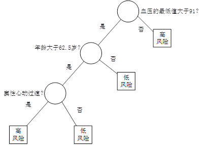
图1 决策树
例如，在某医院内，对因心脏病发作而入院治疗的患者，在住院的前24小时内，观测记录下来他们的19个特征属性——血压、年龄、以及其他17项可以综合判断病人状况的重要指标，用图1所示的决策树判断病人是否属于高危患者。在图1中，圆形为中间节点，也就是树的分支，它代表IF THEN规则的条件；方形为终端节点（叶节点），也就是树的叶，它代表IF THEN规则的结果。我们也把第一个节点称为根节点。
决策树往往采用的是自上而下的设计方法，每迭代循环一次，就会选择一个特征属性进行分叉，直到不能再分叉为止。因此在构建决策树的过程中，选择最佳（既能够快速分类，又能使决策树的深度小）的分叉特征属性是关键所在。这种“最佳性”可以用非纯度（impurity）进行衡量。如果一个数据集合中只有一种分类结果，则该集合最纯，即一致性好；反之有许多分类，则不纯，即一致性不好。有许多指标可以定量的度量这种非纯度，最常用的有熵，基尼指数（Gini Index）和分类误差，它们的公式分别为：
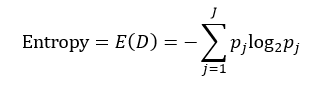（1）
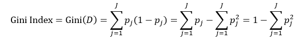（2）
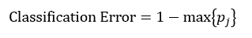（3）
上述所有公式中，值越大，表示越不纯，这三个度量之间并不存在显著的差别。式中D表示样本数据的分类集合，并且该集合共有J种分类，pj表示第j种分类的样本率：
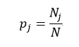（4）
式中N和Nj分别表示集合D中样本数据的总数和第j个分类的样本数量。把式4带入式2中，得到：
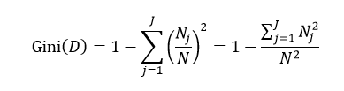（5）
目前常用的决策树的算法包括ID3（Iterative Dichotomiser 3，第3代迭戈二叉树）、C4.5和CART（ClassificationAnd Regression Tree，分类和回归树）。前两种算法主要应用的是基于熵的方法，而第三种应用的是基尼指数的方法。下面我们就逐一介绍这些方法。
ID3是由Ross Quinlan首先提出，它是基于所谓“Occam'srazor”（奥卡姆剃刀），即越简单越好，也就是越是小型的决策树越优于大型的决策树。如前所述，我们已经有了熵作为衡量样本集合纯度的标准，熵越大，越不纯，因此我们希望在分类以后能够降低熵的大小，使之变纯一些。这种分类后熵变小的判定标准可以用信息增益（Information Gain）来衡量，它的定义为：
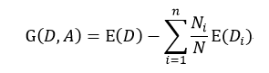（6）
该式表示在样本集合D下特征属性A的信息增益，n表示针对特征属性A，样本集合被划分为n个不同部分，即A中包含着n个不同的值，Ni表示第i个部分的样本数量，E(Di)表示特征属性A下第i个部分的分类集合的熵。信息增益越大，分类后熵下降得越快，则分类效果越好。因此我们在D内遍历所有属性，选择信息增益最大的那个特征属性进行分类。在下次迭代循环中，我们只需对上次分类剩下的样本集合计算信息增益，如此循环，直至不能再分类为止。
C4.5算法也是由Quinlan提出，它是ID3算法的扩展。ID3应用的是信息增益的方法，但这种方法存在一个问题，那就是它会更愿意选择那些包括很多种类的特征属性，即哪个A中的n多，那么这个A的信息增益就可能更大。为此，C4.5使用信息增益率这一准则来衡量非纯度，即：
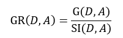（7）
式中，SI(D, A)表示分裂信息值，它的定义为：
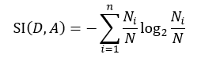（8）
该式中的符号含义与式6相同。同样的，我们选择信息增益率最大的那个特征属性作为分类属性。
CART算法是由Breiman等人首先提出，它包括分类树和回归树两种。我们先来讨论分类树，针对特征属性A，分类后的基尼指数为：
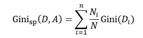（9）
该式中的符号含义与式6相同。与ID3和C4.5不同，我们选择分类基尼指数最小的那个特征属性作为分类属性。当我们每次只想把样本集合分为两类时，即每个中间节点只产生两个分支，但如果特征属性A中有多于2个的值，即n> 2，这时我们就需要一个阈值β，它把D分割成了D1和D2两个部分，不同的β得到不同的D1和D2，我们重新设D1的样本数为L，D2的样本数为R，因此有L+R = N，则式9可简写为：
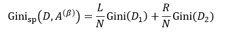（10）
我们把式5带入上式中，得到：
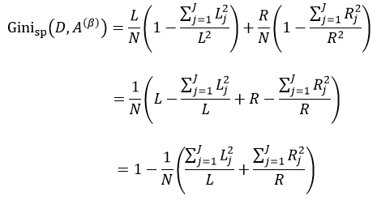（11）
式中，∑Lj = L，∑Rj = R。式11只是通过不同特征属性A的不同阈值β来得到样本集D的不纯度，由于D内的样本数量N是一定的，因此对式11求最小值问题就转换为求式12的最大值问题：
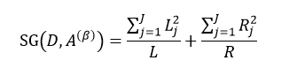（12）
以上给出的是分类树的计算方法，下面介绍回归树。两者的不同之处是，分类树的样本输出（即响应值）是类的形式，如判断蘑菇是有毒还是无毒，周末去看电影还是不去。而回归树的样本输出是数值的形式，比如给某人发放房屋贷款的数额就是具体的数值，可以是0到120万元之间的任意值。为了得到回归树，我们就需要把适合分类的非纯度度量用适合回归的非纯度度量取代。因此我们将熵计算用均方误差替代：
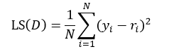（13）
式中N表示D集合的样本数量，yi和ri分别为第i个样本的输出值和预测值。如果我们把样本的预测值用样本输出值的平均来替代，则式13改写为：
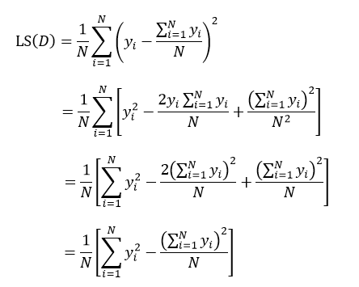（14）
上式表示了集合D的最小均方误差，如果针对于某种特征属性A，我们把集合D划分为s个部分，则划分后的均方误差为：
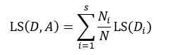（15）
式中Ni表示被划分的第i个集合Di的样本数量。式15与式14的差值为划分为s个部分后的误差减小：
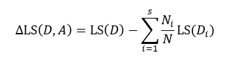（16）
与式6所表示的信息增益相似，我们寻求的是最大化的误差减小，此时就得到了最佳的s个部分的划分。
同样的，当我们仅考虑二叉树的情况时，即每个中间节点只有两个分支，此时s= 2，基于特征属性A的值，集合D被阈值β划分为D1和D2两个集合，每个集合的样本数分别为L和R，则：
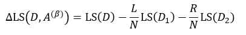（17）
把式14带入上式，得：
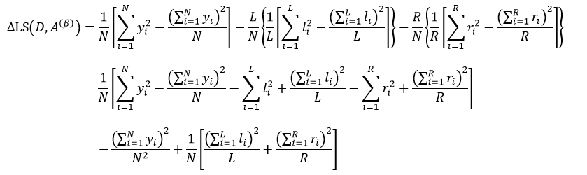（18）
式中，yi是属于集合D的样本响应值，li和ri分别是属于集合D1和D2的样本响应值。对于某个节点来说，它的样本数量以及样本响应值的和是一个定值，因此式18的结果完全取决于方括号内的部分，即：
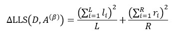（19）
因此求式18的最大值问题就转变为求式19的最大值问题。
我们按照样本响应值是类的形式，还是数值的形式，把决策树分成了分类树和回归树，它们对应不同的计算公式。那么表示特征属性的形式也会有这两种形式，即类的形式和数值的形式，比如决定是否出去踢球，取决于两个条件：风力和气温。风力的表示形式是：无风、小风、中风、大风，气温的表示形式就是具体的摄氏度，如-10℃～40℃之间。风力这个特征属性就是类的形式，而气温就是数值的形式。又比如决定发放房屋贷款，其金额取决于两个条件：是否有车有房和年薪。有车有房的表示形式是：无车无房、有车无房、无车有房、有车有房，而年薪的表示形式就是具体的钱数，如0～20万。有车有房这个特征属性就是类的形式，年薪就是数值的形式。因此在分析样本的特征属性时，我们要把决策树分为四种情况：特征为类的分类树（如决定是否踢球的风力）、特征为数值的分类树（如决定是否踢球的温度）、特征为类的回归树（如发放贷款的有车有房）和特征为数值的回归树（如发放贷款的年薪）。由于特征形式不同，所以计算方法上有所不同：
Ⅰ、特征为类的分类树：对于两类问题，即样本的分类（响应值）只有两种情况：响应值为0和1，按照特征属性的类别的样本响应值为1的数量的多少进行排序。例如我们采集20个样本来构建是否踢球分类树，设出去踢球的响应值为1，不踢球的响应值为0，针对风力这个特征属性，响应值为1的样本有14个，无风有6个样本，小风有5个，中风2个，大风1个，则排序的结果为：大风<中风<小风<无风。然后我们按照这个顺序依次按照二叉树的分叉方式把样本分为左分支和右分支，并带入式12求使该式为最大值的那个分叉方式，即先把是大风的样本放入左分支，其余的放入右分支，带入式12，得到A，再把大风和中风放入左分支，其余的放入右分支，带入式12，得到B，再把大风、中风和小风放入左分支，无风的放入右分支，计算得到C，比较A、B、C，如果最大值为C，则按照C的分叉方式划分左右分支，其中阈值β可以设为3。对于非两类问题，采用的是聚类的方法。
Ⅱ、特征为数值的分类树：由于特征属性是用数值进行表示，我们就按照数值的大小顺序依次带入式12，计算最大值。如一共有14个样本，按照由小至大的顺序为：abcdefghijklmn，第一次分叉为：a|bcdefghijklmn，竖线“|”的左侧被划分到左分支，右侧被划分到右分支，带入式12计算其值，然后第二次分叉：ab|cdefghijklmn，同理带入式12计算其值，以此类推，得到这13次分叉的最大值，该种分叉方式即为最佳的分叉方式，其中阈值β为分叉的次数。
Ⅲ、特征为类的回归树：计算每种特征属性各个种类的平均样本响应值，按照该值的大小进行排序，然后依次带入式19，计算其最大值。
Ⅳ、特征为数值的回归树：该种情况与特征为数值的分类树相同，就按照数值的大小顺序依次带入式19，计算最大值。
在训练决策树时，还有三个技术问题需要解决。第一个问题是，对于分类树，我们还需要考虑一种情况，当用户想要检测一些非常罕见的异常现象的时候，这是非常难办到的，这是因为训练可能包含了比异常多得多的正常情况，那么很可能分类结果就是认为每一个情况都是正常的。为了避免这种情况的出现，我们需要设置先验概率，这样异常情况发生的概率就被人为的增加（可以增加到0.5甚至更高），这样被误分类的异常情况的权重就会变大，决策树也能够得到适当的调整。先验概率需要根据各自情况人为设置，但还需要考虑各个分类的样本率，因此这个先验值还不能直接应用，还需要处理。设Qj为我们设置的第j个分类的先验概率，Nj为该分类的样本数，则考虑了样本率并进行归一化处理的先验概率qj为：
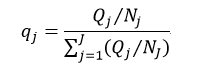（20）其中Qj是开始赋值的先验值，如果你不知道先验值，就用如下计算方法：1.先对所用的分类平均赋值平均值pj = 1/N（n为样本个数），N2j为每个分类的个数(加入二分类，就是正样本数和负样本数)，pj = pj/N2j，sum = ∑pj 最终得到先验率：qj = pj/sum
把先验概率带入式12中，则得到：
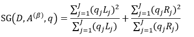（21）j 指几个分类，如果就是分两类，正负样本 j = 2，
第二个需要解决的问题是，某些样本缺失了某个特征属性，但该特征属性又是最佳分叉属性，那么如何对该样本进行分叉呢？目前有几种方法可以解决该问题，一种是直接把该样本删除掉；另一种方法是用各种算法估计该样本的缺失属性值。还有一种方法就是用另一个特征属性来替代最佳分叉属性，该特征属性被称为替代分叉属性。因此在计算最佳分叉属性的同时，还要计算该特征属性的替代分叉属性，以防止最佳分叉属性缺失的情况。CART算法就是采用的该方法，下面我们就来介绍该方法。
寻找替代分叉属性总的原则就是使其分叉的效果与最佳分叉属性相似，即分叉的误差最小。我们仍然根据特征属性是类还是数值的形式，也把替代分叉属性的计算分为两种情况。
当特征属性是类的形式的时候，当最佳分叉属性不是该特征属性时，会把该特征属性的每个种类分叉为不同的分支，例如当最佳分叉属性不是风力时，极有可能把5个无风的样本分叉为不同的分支（如3个属于左分支，2个属于右分支），但当最佳分叉属性是风力时，这种情况就不会发生，也就是5个无风的样本要么属于左分支，要么属于右分支。因此我们把被最佳分叉属性分叉的特征属性种类的分支最大样本数量作为该种类的分叉值，计算该特征属性所有种类的这些分叉值，最终这些分叉值之和就作为该替代分叉属性的分叉值。我们还看前面的例子，无风的分叉值为3，再计算小风、中风、大风的分叉值，假如它们的值分别为4、4、3，则把风力作为替代分叉属性的分叉值为14。按照该方法再计算其他特征属性是类形式的替代分叉值，则替代性由替代分叉值按从大到小进行排序。在用替代分叉属性分叉时那些左分支大于右分支样本数的种类被分叉为左分支，反之为右分支，如上面的例子，无风的样本被分叉为左分支。
当特征属性是数值的形式的时候，样本被分割成了四个部分：LL、LR、RL和RR，前一个字母表示被最佳分叉属性分叉为左右分支，后一个字母表示被替代分叉属性分叉为左右分支，如LR表示被最佳分叉属性分叉为左分支，但被替代分叉属性分叉为右分支的样本，因此LL和RR表示的是被替代分叉属性分叉正确的样本，而LR和RL是被替代分叉属性分叉错误的样本，在该特征属性下，选取阈值对样本进行分割，使LL+RR或LR+RL达到最大值，则最终max{LL+RR，LR+RL}作为该特征属性的替代分叉属性的分叉值。按照该方法再计算其他特征属性是数值形式的替代分叉值，则替代性也由替代分叉值按从大到小进行排序。最终我们选取替代分叉值最大的那个特征属性作为该最佳分叉属性的替代分叉属性。
为了让替代分叉属性与最佳分叉属性相比较，我们还需要对替代分叉值进行规范化处理，如果替代分叉属性是类的形式，则替代分叉值需要乘以式12再除以最佳分叉属性中的种类数量，如果替代分叉属性是数值的形式，则替代分叉值需要乘以式19再除以所有样本的数量。规范化后的替代分叉属性如果就是最佳分叉属性时，两者的值是相等的。
第三个问题就是过拟合。由于决策树的建立完全是依赖于训练样本，因此该决策树对该样本能够产生完全一致的拟合效果。但这样的决策树对于预测样本来说过于复杂，对预测样本的分类效果也不够精确。这种现象就称为过拟合。
将复杂的决策树进行简化的过程称为剪枝，它的目的是去掉一些节点，包括叶节点和中间节点。剪枝常用的方法有预剪枝和后剪枝两种。预剪枝是在构建决策树的过程中，提前终止决策树的生长，从而避免过多的节点的产生。该方法虽然简单但实用性不强，因为我们很难精确的判断何时终止树的生长。后剪枝就是在决策树构建完后再去掉一些节点。常见后剪枝方法有四种：悲观错误剪枝（PEP）、最小错误剪枝（MEP）、代价复杂度剪枝（CCP）和基于错误的剪枝（EBP）。CCP算法能够应用于CART算法中，它的本质是度量每减少一个叶节点所得到的平均错误，在这里我们重点介绍CCP算法。
CCP算法会产生一系列树的序列{T0,T1,…,Tm}，其中T0是由训练得到的最初的决策树，而Tm只含有一个根节点。序列中的树是嵌套的，也就是序列中的Ti+1是由Ti通过剪枝得到的，即实现用Ti+1中一个叶节点来替代Ti中以该节点为根的子树。这种被替代的原则就是使误差的增加率α最小，即
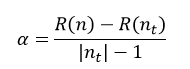（22）nt是节点数
式中，R(n)表示Ti中节点n的预测误差，R(nt)表示Ti中以节点n为根节点的子树的所有叶节点的预测误差之和，|nt|为该子树叶节点的数量，|nt|也被称为复杂度，因为叶节点越多，复杂性当然就越强。因此α的含义就是用一个节点n来替代以n为根节点的所有|nt|个节点的误差增加的规范化程度。在Ti中，我们选择最小的α值的节点进行替代，最终得到Ti+1。以此类推，每需要得到一棵决策树，都需要计算其前一棵决策树的α值，根据α值来对前一棵决策树进行剪枝，直到最终剪枝到只剩下含有一个根节点的Tm为止。
根据决策树是分类树还是回归树，节点的预测误差的计算也分为两种情况。在分类树下，我们可以应用上面介绍过的式1～式3中的任意一个，如果我们应用式3来表示节点n的预测误差，则：
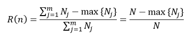（23）
式中，Nj表示节点n下第j个分类的样本数，N为该节点的所有样本数，max{Nj}表示在m个分类中，拥有样本数最多的那个分类的样本数量。在回归树下，我们可以应用式14来表示节点n的预测误差：
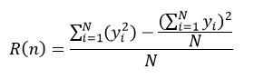（24）
式中，yi表示第i个样本的响应值，N为该节点的样本数量。我们把式23和式24的分子部分称为节点的风险值。
我们用全部样本得到的决策树序列为{T0,T1,…,Tm}，其所对应的α值为α0<α1<…<αm。下一步就是如何从这个序列中最优的选择一颗决策树Ti。而与其说找到最优的Ti，不如说找到其所对应的αi。这一步骤通常采用的方法是交叉验证（Cross-Validation）。
我们把L个样本随机划分为数量相等的V个子集Lv，v=1,…,V。第v个训练样本集为：
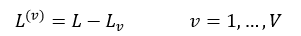（25）
则Lv被用来做L(v)的测试样本集。对每个训练样本集L(v)按照CCP算法得到决策树的序列{T0(v),T1(v),…,Tm(v) }，其对应的α值为α0(v)<α1(v)<…<αm(v)。α值的计算仍然采用式22。对于分类树来说，第v个子集的节点n的预测误差为：
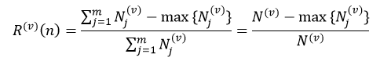（26）
式中，Nj(v)表示训练样本集L(v)中节点n的第j个分类的样本数，N(v)为L(v)中节点n的所有样本数，max{Nj(v)}表示在m个分类中，L(v)中节点n拥有样本数最多的那个分类的样本数量。对于回归树来说，第v个子集的节点n的预测误差为：
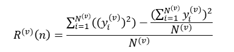（27）
式中，yj(v)表示训练样本集L(v)中节点n的第i个样本的响应值。我们仍然把式26和式27的分子部分称交叉验证子集中的节点风险值。
我们由训练样本集得到了树序列，然后应用这些树对测试样本集进行测试，测试的结果用错误率来衡量，即被错误分类的样本数量。对于分类树来说，节点n的错误率为：
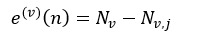（28）
式中，Nv表示测试样本集Lv中节点n的所有样本数，Nv,j表示Lv中第j个分类的样本数，这个j是式26中max{|Lj(v)|}所对应的j。对于回归树来说，节点n的错误率为：
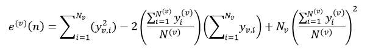（29）
式中，yv,i表示Lv的第i个样本响应值。决策树的总错误率E(v)等于该树所有叶节点的错误率之和。
虽然交叉验证子集决策树序列T(v)的数量要与由全体样本得到的决策树序列T的数量相同，但两者构建的形式不同，它需要比较两者的α值后再来构建。而为了比较由全体样本训练得到α值与交叉验证子集的α(v)值之间的大小，我们还需要对α值进行处理，即
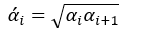（30）
其中α’0 = 0，而α’m为无穷大。
我们设按照式22得到的初始训练子集L(v)决策树序列为{T0(v),T1(v),…,Tm(v)}，其所对应的α(v)值为{α0(v), α1(v),…, αm(v)}。最终的树序列也是由这些T(v)组成，并且也是嵌套的形式，但可以重复，而且必须满足：
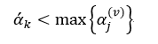（31）
该式的含义是T(v)中第k个子树的α(v)值要小于α’k的最大的α(v)所对应的子树，因此最终的树序列有可能是这种形式：T0(v),T0(v),T1(v),T1(v),T2(v),T2(v),T2(v),T2(v),…，直到序列中树的数量为m为止。
子集的决策树序列构建好了，下面我们就可以计算V个子集中树序列相同的总错误率之和，即
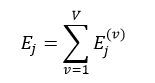（32）
则最佳的子树索引J为：
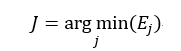（33）
最终我们选择决策树序列{T0,T1,…,Tm}中第J棵树为最佳决策树，该树的总错误率最小。
如果我们在选择决策树时使用1-SE（1 Standard Error of Minimum Error）规则的话，那么有可能最终的决策树不是错误率最小的子树，而是错误率略大，但树的结构更简单的那颗决策树。我们首先计算误差范围SE：
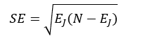（34）
式中，EJ表示最佳子树的总错误率，N为总的样本数。则最终被选中的决策树的总错误率EK要满足：
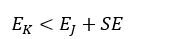（35）
并且决策树的结构最简单。
以上我们完整并详细的介绍了构建决策树，也就是训练决策树的过程，在这个过程中我们没有放过每个技术细节。而预测样本很简单，只要把样本按照最佳分叉属性（或替代分叉属性）一次一次分叉，直到到达决策树的叶节点，该叶节点的值就是该预测样本的响应值。
二、源码
OpenCV中，决策树应用的是CART算法，并且分类树和回归树都实现了。而剪枝是应用的CCP算法。
我们先给出用于构建决策树的参数：
- CvDTreeParams::CvDTreeParams() : max_categories(10), max_depth(INT_MAX), min_sample_count(10),
- cv_folds(10), use_surrogates(true), use_1se_rule(true),
- truncate_pruned_tree(true), regression_accuracy(0.01f), priors(0)
- {}
- CvDTreeParams::CvDTreeParams( int _max_depth, int _min_sample_count,
- float _regression_accuracy, bool _use_surrogates,
- int _max_categories, int _cv_folds,
- bool _use_1se_rule, bool _truncate_pruned_tree,
- const float* _priors ) :
- max_categories(_max_categories), max_depth(_max_depth),
- min_sample_count(_min_sample_count), cv_folds (_cv_folds),
- use_surrogates(_use_surrogates), use_1se_rule(_use_1se_rule),
- truncate_pruned_tree(_truncate_pruned_tree),
- regression_accuracy(_regression_accuracy),
- priors(_priors)
- {}
其中参数的含义为：
max_depth：该参数指定决策树的最大可能深度。但由于其他终止条件或者是被剪枝的缘故，最终的决策树的深度可能要比max_depth小。该值不能小于0，否则报错。如果用户把该值设置为大于25的数值，则系统会重新把该值设为25，即该值不能超过25
min_sample_count：如果某个节点的样本数量小于该值，则该节点将不再被分叉
regression_accuracy：该参数是终止构建回归树的一个条件，表示回归树的响应值的精度如果达到了该值，则无需再分叉。该值不能小于0，否则报错
use_surrogates：如果该参数为真，则替代分叉节点需要产生，替代分叉节点用在解决缺失特征属性和进行变量重要性的估计
max_categories：表示特征属性为类的形式的最大的类的数量，如果在训练的过程中，类的数量大于该值，则采用聚类的方法会更高效，该参数只应用于非两类的分类树问题。该值一定要大于或等于2，否则报错
cv_folds：如果该参数大于1，则应该交叉验证来进行剪枝，该值表示交叉验证的子集数量。该值一定不能小于0，否则报错。如果用户把该值设置为1，则系统会重新把该值设为0
use_1se_rule：如果为真，表示在剪枝的过程中应用1SE规则，该规则的应用使决策树更简单，对训练数据的噪声更有抵抗力，但是精度会下降了
truncate_pruned_tree：如果为真，要被剪掉的节点将被从树上移除，否则它们被保留
priors：表示分类树的类别标签的先验概率，按类别标签值排序。该参数可以用于针对某个特定的类别。例如，如果用户希望探测到某个比较少见的异常变化，但训练可能包含了比异常多得多的正常情况，那么很可能分类结果就是认为每个情况都是正常的。为了避免这一点，先验就必须被指定，异常情况发生的概率需要人为的增加（增加到0.5甚至更高），这样误分类的异常情况的权重就会变大，树也能够得到适当的调整。
CvDTree构造函数：
- CvDTree::CvDTree()
- {
- data = 0; //样本数据
- var_importance = 0; //重要数据
- default_model_name = "my_tree"; //表明该类型为决策树
- clear(); //清空一些变量
- }
训练样本，构建决策树函数CvDTree::train：
- bool CvDTree::train( const CvMat* _train_data, int _tflag,
- const CvMat* _responses, const CvMat* _var_idx,
- const CvMat* _sample_idx, const CvMat* _var_type,
- const CvMat* _missing_mask, CvDTreeParams _params )
- //_train_data训练样本数据，必须为32FC1类型的矩阵形式
- //_tflag训练数据的特征属性类型，如果为CV_ROW_SAMPLE，表示样本是以行的形式储存的，即_train_data矩阵的每一行为一个样本（或特征矢量）；如果为CV_COL_SAMPLE，表示样本是以列的形式储存的
- //_responses决策树的结果，即响应值，该值必须是32SC1或32FC1类型的一维矩阵（即矢量）的形式，并且元素的数量必须与训练样本数据_train_data的样本数一致
- //_var_idx标识感兴趣的特征属性，即真正用于训练的那些特征属性，该值的形式与_sample_idx变量相似
- //_sample_idx标识感兴趣的样本，即真正用于训练的样本，该值必须是一维矩阵的形式，即矢量的形式，并且类型必须是8UC1、8SU1或者32SC1。如果为8UC1或8SU1，则该值的含义是用掩码的形式表示对应的样本，即0表示不感兴趣的样本，其他数为感兴趣的样本，因此矢量的元素数量必须与训练样本数据_train_data的样本数一致；如果为32SC1，则该值的含义是那些感兴趣的样本的索引，而不感兴趣的样本的索引不在该矢量中出现，因此该矢量的元素数量可以小于或等于_train_data的样本数
- //_var_type特征属性的形式，是类的形式还是数值的形式，用掩码的形式表现对应特征属性的形式，0表示为数值的形式，1表示为类的形式。该值必须是一维矩阵，并且元素的数量必须是真正用于训练的那些特征属性的数量加1，多余的一个元素表示的是响应值的形式，即是分类树还是回归树
- //_missing_mask缺失的特征属性，用掩码的形式表现对应的特征属性，0表示没有缺失，而且必须与_train_data的矩阵尺寸大小一致
- //_params为构建决策树的参数
- {
- bool result = false; //标识变量
- CV_FUNCNAME( "CvDTree::train" );
- __BEGIN__;
- clear(); //清空一些变量
- //实例化CvDTreeTrainData类，并通过set_data函数设置训练样本数据，如果需要交叉验证（cv_folds > 1），则还要随机的把样本均等分cv_folds个子集。最后一个参数_share赋值为false，表示重新构建一个决策树
- data = new CvDTreeTrainData( _train_data, _tflag, _responses,
- _var_idx, _sample_idx, _var_type,
- _missing_mask, _params, false );
- //调用do_train函数，对全体样本数据进行训练
- CV_CALL( result = do_train(0) );
- __END__;
- return result;
- }
- bool CvDTree::train( const Mat& _train_data, int _tflag,
- const Mat& _responses, const Mat& _var_idx,
- const Mat& _sample_idx, const Mat& _var_type,
- const Mat& _missing_mask, CvDTreeParams _params )
- {
- CvMat tdata = _train_data, responses = _responses, vidx=_var_idx,
- sidx=_sample_idx, vtype=_var_type, mmask=_missing_mask;
- return train(&tdata, _tflag, &responses, vidx.data.ptr ? &vidx : 0, sidx.data.ptr ? &sidx : 0,
- vtype.data.ptr ? &vtype : 0, mmask.data.ptr ? &mmask : 0, _params);
- }
- bool CvDTree::train( CvMLData* _data, CvDTreeParams _params )
- {
- bool result = false;
- CV_FUNCNAME( "CvDTree::train" );
- __BEGIN__;
- //提取出训练样本数据的一些参数
- const CvMat* values = _data->get_values();
- const CvMat* response = _data->get_responses();
- const CvMat* missing = _data->get_missing();
- const CvMat* var_types = _data->get_var_types();
- const CvMat* train_sidx = _data->get_train_sample_idx();
- const CvMat* var_idx = _data->get_var_idx();
- CV_CALL( result = train( values, CV_ROW_SAMPLE, response, var_idx,
- train_sidx, var_types, missing, _params ) );
- __END__;
- return result;
- }
- bool CvDTree::train( CvDTreeTrainData* _data, const CvMat* _subsample_idx )
- {
- bool result = false;
- CV_FUNCNAME( "CvDTree::train" );
- __BEGIN__;
- clear();
- data = _data;
- data->shared = true; //表示共享决策树
- //调用do_train函数，只对_subsample_idx指定的由_sample_idx参数确定的训练样本集的索引进行训练
- CV_CALL( result = do_train(_subsample_idx));
- __END__;
- return result;
- }
- bool CvDTree::do_train( const CvMat* _subsample_idx )
- {
- bool result = false;
- CV_FUNCNAME( "CvDTree::do_train" );
- __BEGIN__;
- //提取出_subsample_idx指定的训练样本集合，如果_subsample_idx=0，则取所有样本数据
- //root表示根节点
- root = data->subsample_data( _subsample_idx );
- CV_CALL( try_split_node(root)); //递归调用try_split_node函数，构造决策树
- if( root->split ) //如果得到了决策树
- {
- //分别确保左分支和右分支的正确性
- CV_Assert( root->left );
- CV_Assert( root->right );
- //如果用户所设置的交叉验证的子集大于1，则表示需要对决策树进行剪枝。在前面已经提到，在实例化CvDTreeTrainData时，会把cv_folds = 1重新设置为cv_folds = 0
- if( data->params.cv_folds > 0 )
- CV_CALL( prune_cv() ); //剪枝
- //如果决策树的数据不需要共享，则清空训练所需的数据
- if( !data->shared )
- data->free_train_data();
- result = true; //正确返回标识
- }
- __END__;
- return result; //返回
- }
try_split_node函数的作用是在真正分叉之前，先预处理一下节点，试探一下该节点是否能够被分叉，能则调用split_node_data函数开始分叉，不能则退出，然后对得到的左分支和右分支再分别递归。
- void CvDTree::try_split_node( CvDTreeNode* node )
- {
- CvDTreeSplit* best_split = 0;
- //n表示该节点的样本数，vi表示特征属性
- int i, n = node->sample_count, vi;
- bool can_split = true; //标识该节点是否能够被分叉
- double quality_scale;
- // calc_node_value函数见后面的分析
- calc_node_value( node );
- //如果该节点的样本数量小于所设定的阈值，或者目前决策树的深度超过了所设定的阈值，则该节点不能再被分叉
- if( node->sample_count <= data->params.min_sample_count ||
- node->depth >= data->params.max_depth )
- can_split = false; //设置标识变量
- if( can_split && data->is_classifier ) //分类树
- {
- // check if we have a "pure" node,
- // we assume that cls_count is filled by calc_node_value()
- // cls_count数组存储着每个分类的样本数量，它是由calc_node_value()函数得到的
- int* cls_count = data->counts->data.i;
- int nz = 0, m = data->get_num_classes(); //m表示有多少个分类
- //遍历所有的分类，计算样本数量不为零的分类的个数
- for( i = 0; i < m; i++ )
- nz += cls_count[i] != 0;
- //如果nz等于1，说明只有一个分类，因此该节点无需再分
- if( nz == 1 ) // there is only one class
- can_split = false; //设置标识变量
- }
- else if( can_split ) //回归树
- {
- // node_risk，即节点的风险值由calc_node_value()函数得到的，对node_risk开根号并取平均，表示平均误差量，即精度，其结果与所设定的阈值比较
- if( sqrt(node->node_risk)/n < data->params.regression_accuracy )
- can_split = false; //设置标识变量
- }
- if( can_split ) //如果该节点可以被分叉，则找到最佳的分类属性
- {
- // find_best_split函数见后面的分析
- best_split = find_best_split(node); //得到最佳分叉属性
- // TODO: check the split quality ...
- //通过上面的注释可以看出，OpenCV的后续版本可能还会对这个最佳分类属性进行进一步的检测
- node->split = best_split; //赋值
- }
- //该节点不能被分叉，或没有找到分类属性，也就是达到了也节点，则退出该函数，结束该分支的递归
- if( !can_split || !best_split )
- {
- data->free_node_data(node); //清空该节点数据
- return;
- }
- // 用最佳分叉属性完成对节点的分叉，即标注各个样本的方向信息，calc_node_dir函数在后面给出了讲解，其中该函数的返回值quality_scale为替代分叉属性值的规范化处理常数
- quality_scale = calc_node_dir( node );
- if( data->params.use_surrogates ) //表示使用替代分叉属性
- {
- // find all the surrogate splits
- // and sort them by their similarity to the primary one
- //遍历所有的特征属性，计算替代分叉属性
- for( vi = 0; vi < data->var_count; vi++ )
- {
- CvDTreeSplit* split;
- //ci大于0表示特征属性是类的形式，ci小于0表示特征属性是数值的形式
- int ci = data->get_var_type(vi);
- //如果当前的特征属性为最佳分叉属性，则进行下一个vi的循环
- if( vi == best_split->var_idx )
- continue;
- if( ci >= 0 ) //特征属性是类的形式
- // find_surrogate_split_cat函数在后面给出详细的介绍
- split = find_surrogate_split_cat( node, vi );
- else //特征属性是数值的形式
- // find_surrogate_split_ord函数在后面给出详细的介绍
- split = find_surrogate_split_ord( node, vi );
- if( split )
- //得到了替代分叉属性，对现有的替代分叉属性按从大到小的顺序进行排序
- {
- // insert the split
- //把替代分叉属性的分叉值保存在node->split->next内
- CvDTreeSplit* prev_split = node->split;
- //对替代分叉属性的分叉值进行规范化处理
- split->quality = (float)(split->quality*quality_scale);
- //排序
- while( prev_split->next &&
- prev_split->next->quality > split->quality )
- prev_split = prev_split->next;
- split->next = prev_split->next;
- prev_split->next = split;
- }
- }
- }
- //完成节点的分叉，得到左分支和右分支，并为下次分叉赋值给各个变量
- split_node_data( node );
- //分别对左分支和右分支递归调用try_split_node函数
- try_split_node( node->left );
- try_split_node( node->right );
- }
- void CvDTree::calc_node_value( CvDTreeNode* node )
- {
- //n为该节点的样本数，cv_n为交叉验证的子集数量
- int i, j, k, n = node->sample_count, cv_n = data->params.cv_folds;
- int m = data->get_num_classes(); //分类树的分类数量，即它的响应值的数量
- //为缓存开辟空间，base_size为基本大小，ext_size为扩增大小
- //根据是分类树还是回归树设置不同的大小
- int base_size = data->is_classifier ? m*cv_n*sizeof(int) : 2*cv_n*sizeof(double)+cv_n*sizeof(int);
- int ext_size = n*(sizeof(int) + (data->is_classifier ? sizeof(int) : sizeof(int)+sizeof(float)));
- //开辟空间
- cv::AutoBuffer<uchar> inn_buf(base_size + ext_size);
- uchar* base_buf = (uchar*)inn_buf; //基本空间
- uchar* ext_buf = base_buf + base_size; //扩展空间
- int* cv_labels_buf = (int*)ext_buf;
- //得到样本所对应的交叉验证的子集
- const int* cv_labels = data->get_cv_labels(node, cv_labels_buf);
- if( data->is_classifier ) //分类树
- {
- // in case of classification tree:
- // * node value is the label of the class that has the largest weight in the node.
- // * node risk is the weighted number of misclassified samples,
- // * j-th cross-validation fold value and risk are calculated as above,
- // but using the samples with cv_labels(*)!=j. 不包括该子集
- // * j-th cross-validation fold error is calculated as the weighted number of
- // misclassified samples with cv_labels(*)==j. 仅是该子集
- // compute the number of instances of each class
- //cls_count数组用于表示每个分类中的样本数量
- int* cls_count = data->counts->data.i;
- // responses_buf指向的空间为样本数据的响应，即分类结果
- int* responses_buf = cv_labels_buf + n;
- //得到样本的响应值，也就是样本的分类结果
- const int* responses = data->get_class_labels(node, responses_buf);
- // cv_cls_count数组用于表示交叉验证时的每个子集的每类样本的数量
- int* cv_cls_count = (int*)base_buf;
- double max_val = -1, total_weight = 0;
- int max_k = -1;
- // priors指向存储着先验概率
- double* priors = data->priors_mult->data.db;
- // cls_count数组清零
- for( k = 0; k < m; k++ )
- cls_count[k] = 0;
- if( cv_n == 0 ) //不需要交叉验证
- {
- //遍历所有训练样本，得到不同分类结果的样本数量
- for( i = 0; i < n; i++ )
- cls_count[responses[i]]++;
- }
- else //需要交叉验证
- {
- // cv_cls_count数组清零
- for( j = 0; j < cv_n; j++ )
- for( k = 0; k < m; k++ )
- cv_cls_count[j*m + k] = 0;
- for( i = 0; i < n; i++ )
- {
- //j表示第i个样本所在的交叉验证的子集，k表示该样本的分类结果
- j = cv_labels[i]; k = responses[i];
- //对不同交叉验证子集的不同分类结果进行计数
- cv_cls_count[j*m + k]++;
- }
- //统计所有样本的不同分类的数量
- for( j = 0; j < cv_n; j++ )
- for( k = 0; k < m; k++ )
- cls_count[k] += cv_cls_count[j*m + k];
- }
- //如果有先验概率，并且该节点是根节点，计算先验概率
- if( data->have_priors && node->parent == 0 )
- {
- // compute priors_mult from priors, take the sample ratio into account.
- //计算先验概率
- double sum = 0;
- for( k = 0; k < m; k++ )
- {
- int n_k = cls_count[k]; //得到第k个分类的样本数量，即式20的Nj
- // data->priors->data.db[k]为式20的Qj，priors[k]为式20的Qj/Nj
- priors[k] = data->priors->data.db[k]*(n_k ? 1./n_k : 0.);
- sum += priors[k]; //累加求和，表示式20中的∑j(Qj/Nj)
- }
- sum = 1./sum; //倒数
- //得到归一化的优先率
- for( k = 0; k < m; k++ )
- priors[k] *= sum; //得到式20中的qj
- }
- //遍历所有分类，得到最多的样本数量max_val，以及对应的分类max_k
- for( k = 0; k < m; k++ )
- {
- //得到加权后的第k个分类的样本数
- double val = cls_count[k]*priors[k];
- total_weight += val; //累加
- if( max_val < val ) //寻找最大值
- {
- max_val = val; //得到最大值
- max_k = k; //最大值对应的分类索引
- }
- }
- node->class_idx = max_k; //赋值
- //得到该节点的值，它等于拥有最大数量的那个分类的响应值
- node->value = data->cat_map->data.i[
- data->cat_ofs->data.i[data->cat_var_count] + max_k];
- //该节点的风险值，即式23的分子部分
- node->node_risk = total_weight - max_val;
- //遍历所有交叉验证的子集
- for( j = 0; j < cv_n; j++ )
- {
- double sum_k = 0, sum = 0, max_val_k = 0;
- max_val = -1; max_k = -1;
- //遍历该子集的各个分类
- for( k = 0; k < m; k++ )
- {
- double w = priors[k]; //该类的先验概率
- //得到加权后第j个子集的第k个分类的样本数，即式25中Lv中的第k个分类的样本数，v就是这里j，也就是第j个测试样本集
- double val_k = cv_cls_count[j*m + k]*w;
- //得到加权后的第j个子集中的不包括第k个分类的所有样本数，即式25中L(v)中第k个分类的样本数，v就是这里j，也就是第j个训练样本集
- double val = cls_count[k]*w - val_k;
- sum_k += val_k; // val_k的累加，即Lv中的样本数
- sum += val; // val的累加，即L(v)中的样本数
- //在当前子集下寻找具有最大分类样本数的val
- if( max_val < val ) //寻找最大值
- {
- max_val = val; //最大的val
- max_val_k = val_k; //此时对应的最大val_k
- max_k = k; //此时对应的分类索引
- }
- }
- //赋值
- node->cv_Tn[j] = INT_MAX; //最大常数
- node->cv_node_risk[j] = sum - max_val; //风险值，式26的分子部分
- node->cv_node_error[j] = sum_k - max_val_k; //错误率，式28
- }
- }
- else //回归树
- {
- // in case of regression tree:
- // * node value is 1/n*sum_i(Y_i), where Y_i is i-th response,
- // n is the number of samples in the node.
- // * node risk is the sum of squared errors: sum_i((Y_i - <node_value>)^2)
- // * j-th cross-validation fold value and risk are calculated as above,
- // but using the samples with cv_labels(*)!=j.
- // * j-th cross-validation fold error is calculated
- // using samples with cv_labels(*)==j as the test subset:
- // error_j = sum_(i,cv_labels(i)==j)((Y_i - <node_value_j>)^2),
- // where node_value_j is the node value calculated
- // as described in the previous bullet, and summation is done
- // over the samples with cv_labels(*)==j.
- double sum = 0, sum2 = 0;
- float* values_buf = (float*)(cv_labels_buf + n);
- int* sample_indices_buf = (int*)(values_buf + n);
- //得到所有样本的响应值，values指向该内存
- const float* values = data->get_ord_responses(node, values_buf, sample_indices_buf);
- double *cv_sum = 0, *cv_sum2 = 0;
- int* cv_count = 0;
- if( cv_n == 0 ) //不需要交叉验证
- {
- for( i = 0; i < n; i++ ) //遍历所有样本
- {
- double t = values[i]; //得到该样本的响应值
- sum += t; //响应值累加
- sum2 += t*t; //响应值平方的累加
- }
- }
- else //需要交叉验证
- {
- cv_sum = (double*)base_buf; //表示各个子集的样本响应值的和
- cv_sum2 = cv_sum + cv_n; //表示各个子集的样本响应值平方和
- cv_count = (int*)(cv_sum2 + cv_n); //表示各个子集的样本数量
- //以上三个数组清零
- for( j = 0; j < cv_n; j++ )
- {
- cv_sum[j] = cv_sum2[j] = 0.;
- cv_count[j] = 0;
- }
- for( i = 0; i < n; i++ ) //遍历所有样本
- {
- j = cv_labels[i]; //得到当前样本所在的交叉验证的子集
- double t = values[i]; //当前样本的响应值
- double s = cv_sum[j] + t; //计算各个子集的样本响应值的和
- double s2 = cv_sum2[j] + t*t; //计算各个子集的样本响应值平方和
- int nc = cv_count[j] + 1; //统计各个子集的样本数量
- //针对当前样本所在的交叉验证的子集
- cv_sum[j] = s; //响应值累加
- cv_sum2[j] = s2; //响应值平方累加
- cv_count[j] = nc; //样本计数
- }
- //遍历所有交叉验证的子集
- for( j = 0; j < cv_n; j++ )
- {
- sum += cv_sum[j]; //所有样本响应值的和
- sum2 += cv_sum2[j]; //所有样本响应值平方和
- }
- }
- //该节点的风险值，即式24的分子部分
- node->node_risk = sum2 - (sum/n)*sum;
- //该节点的值等于所有样本的平均响应值
- node->value = sum/n;
- //遍历所有交叉验证的子集，计算每个子集的风险值和错误率
- for( j = 0; j < cv_n; j++ )
- {
- //s为该子集的样本响应值之和，即测试样本集的响应值之和；si为不包括该子集的所有样本的响应值之和，即训练样本集的响应值之和
- double s = cv_sum[j], si = sum - s;
- //s2为该子集的样本响应值平方之和，即测试样本集的响应值的平方之和；s2i为不包括该子集的所有样本的响应值平方之和，即训练样本集的响应值的平方之和
- double s2 = cv_sum2[j], s2i = sum2 - s2;
- //c为该子集的样本数量，即测试样本集的数量；ci为不包括该子集的所有样本数量，即训练样本集的数量
- int c = cv_count[j], ci = n - c;
- //r表示训练样本集的平均响应值
- double r = si/MAX(ci,1);
- //该子集的风险值，式27的分子部分
- node->cv_node_risk[j] = s2i - r*r*ci;
- //该子集的错误率，式29
- node->cv_node_error[j] = s2 - 2*r*s + c*r*r;
- node->cv_Tn[j] = INT_MAX; //最大常数
- }
- }
- }
- CvDTreeSplit* CvDTree::find_best_split( CvDTreeNode* node )
- {
- //实例化DTreeBestSplitFinder类，初始化一些变量
- DTreeBestSplitFinder finder( this, node );
- //并行处理，寻找最佳的分类特征属性，它调用DTreeBestSplitFinder类的重载运算符()，该函数的分析见下面
- cv::parallel_reduce(cv::BlockedRange(0, data->var_count), finder);
- CvDTreeSplit *bestSplit = 0;
- if( finder.bestSplit->quality > 0 ) //找到了最佳分类特征属性
- {
- bestSplit = data->new_split_cat( 0, -1.0f );
- memcpy( bestSplit, finder.bestSplit, finder.splitSize ); //赋值
- }
- return bestSplit; //返回最佳分类特征属性
- }
- void DTreeBestSplitFinder::operator()(const BlockedRange& range)
- {
- //vi表示样本数据的特征属性，vi1和vi2分别为特征属性队列中的首和末属性
- int vi, vi1 = range.begin(), vi2 = range.end();
- int n = node->sample_count; //得到该节点的样本数量
- CvDTreeTrainData* data = tree->get_data(); //得到全部训练样本数据
- AutoBuffer<uchar> inn_buf(2*n*(sizeof(int) + sizeof(float))); //开辟一块内存
- //遍历所有特征属性
- for( vi = vi1; vi < vi2; vi++ )
- {
- CvDTreeSplit *res;
- //得到该特征属性的类型，如果ci大于零，表示特征属性是类的形式，反之则是数值的形式
- int ci = data->get_var_type(vi);
- //如果在该特征属性下只有一个样本，或者没有样本（即缺失），则退出该次vi循环
- if( node->get_num_valid(vi) <= 1 )
- continue;
- if( data->is_classifier ) //分类树
- {
- if( ci >= 0 ) //特征为类的分类树
- res = tree->find_split_cat_class( node, vi, bestSplit->quality, split, (uchar*)inn_buf );
- else //特征为数值的分类树
- res = tree->find_split_ord_class( node, vi, bestSplit->quality, split, (uchar*)inn_buf );
- }
- else //归纳树
- {
- if( ci >= 0 ) //特征为类的回归树
- res = tree->find_split_cat_reg( node, vi, bestSplit->quality, split, (uchar*)inn_buf );
- else //特征为数值的回归树
- res = tree->find_split_ord_reg( node, vi, bestSplit->quality, split, (uchar*)inn_buf );
- }
- //如果计算得到的分类属性split的值大于bestSplit，则保存该split于bestSplit中，作为下次循环判断最佳分类属性的依据
- if( res && bestSplit->quality < split->quality )
- memcpy( (CvDTreeSplit*)bestSplit, (CvDTreeSplit*)split, splitSize );
- }
- }
- CvDTreeSplit* CvDTree::find_split_cat_class( CvDTreeNode* node, int vi, float init_quality,
- CvDTreeSplit* _split, uchar* _ext_buf )
- {
- //得到该节点的特征属性的形式
- int ci = data->get_var_type(vi);
- int n = node->sample_count; //得到该节点的样本数量
- //得到样本数据的分类数
- int m = data->get_num_classes();
- //得到该特征属性vi的类别数量，也就是该特征有mi个种类
- int _mi = data->cat_count->data.i[ci], mi = _mi;
- //为该特征属性vi开辟一块内存空间
- int base_size = m*(3 + mi)*sizeof(int) + (mi+1)*sizeof(double);
- if( m > 2 && mi > data->params.max_categories )
- base_size += (m*min(data->params.max_categories, n) + mi)*sizeof(int);
- else
- base_size += mi*sizeof(int*);
- cv::AutoBuffer<uchar> inn_buf(base_size);
- if( !_ext_buf )
- inn_buf.allocate(base_size + 2*n*sizeof(int));
- uchar* base_buf = (uchar*)inn_buf;
- uchar* ext_buf = _ext_buf ? _ext_buf : base_buf + base_size;
- //二叉树，lc和rc分别指向二叉树左、右分支，它们都是含有m个元素的一维数组，各存储着该节点各自分支的m个分类的样本数量
- int* lc = (int*)base_buf; //lc指向二叉树左分支
- int* rc = lc + m; //rc指向二叉树右分支
- // cjk表示该特征属性的mi个种类的m个分类的样本数量，是一个有mi个元素的m维数组（也可以看成是含有m个元素的mi维数组）
- int* _cjk = rc + m*2, *cjk = _cjk;
- // c_weights表示该特征属性中每个种类的权值，是含有为mi个元素的一维数组
- double* c_weights = (double*)alignPtr(cjk + m*mi, sizeof(double));
- int* labels_buf = (int*)ext_buf;
- //label指向该特征属性中各个样本所对应的种类
- const int* labels = data->get_cat_var_data(node, vi, labels_buf);
- int* responses_buf = labels_buf + n;
- //responses指向该节点样本的分类，即响应值
- const int* responses = data->get_class_labels(node, responses_buf);
- int* cluster_labels = 0;
- int** int_ptr = 0;
- int i, j, k, idx;
- double L = 0, R = 0;
- double best_val = init_quality;
- int prevcode = 0, best_subset = -1, subset_i, subset_n, subtract = 0;
- //得到先验概率，该值由calc_node_value函数计算得到
- const double* priors = data->priors_mult->data.db; //得到先验概率
- // init array of counters:
- // c_{jk} - number of samples that have vi-th input variable = j and response = k.
- //初始化cjk数组，即清零。通过上面的英文注释可以看出，cjk中j代表着该特征属性vi的种类，k代表着响应值（即样本分类）
- for( j = -1; j < mi; j++ )
- for( k = 0; k < m; k++ )
- cjk[j*m + k] = 0;
- //遍历该节点的所有样本，为cjk赋值
- for( i = 0; i < n; i++ )
- {
- //得到该特征属性的第i个样本的种类
- j = ( labels[i] == 65535 && data->is_buf_16u) ? -1 : labels[i];
- //得到该特征属性的第i个样本的分类，即响应值
- k = responses[i];
- cjk[j*m + k]++; //计数累加
- }
- if( m > 2 ) //非两类问题，即多于2个的分类（响应值）
- {
- //如果该特征属性的种类数量mi大于所设定的阈值
- if( mi > data->params.max_categories )
- {
- //mi重新设置为阈值或样本数量的最小的那个值
- mi = MIN(data->params.max_categories, n);
- cjk = (int*)(c_weights + _mi);
- cluster_labels = cjk + m*mi;
- //聚类，这里就不再分析
- cluster_categories( _cjk, _mi, m, cjk, mi, cluster_labels );
- }
- subset_i = 1;
- subset_n = 1 << mi;
- }
- else //两类问题
- {
- assert( m == 2 ); //确定为两类问题
- int_ptr = (int**)(c_weights + _mi);
- //数组int_ptr[j]表示该特征属性的第j个种类的响应值为1的样本数量，因为是两类问题，另一个响应值是为0
- for( j = 0; j < mi; j++ )
- int_ptr[j] = cjk + j*2 + 1; //这里的2就是m
- //按样本数量由多到少进行排序，int_ptr指针的顺序改变了
- icvSortIntPtr( int_ptr, mi, 0 );
- subset_i = 0;
- subset_n = mi;
- }
- //遍历样本的各个分类，初始化数组lc和rc，即式12的Lj和Rj
- for( k = 0; k < m; k++ )
- {
- int sum = 0;
- for( j = 0; j < mi; j++ )
- sum += cjk[j*m + k];
- rc[k] = sum; //把所有样本数量先存储在rc中
- lc[k] = 0; //清零
- }
- //遍历特征属性的各个种类，得到右分支的样本数R
- for( j = 0; j < mi; j++ )
- {
- double sum = 0;
- //遍历第j个特征属性种类的所有分类，每个分类的样本个数乘以它所对应的先验概率，然后再累加求和，即为该特征属性种类的权值
- for( k = 0; k < m; k++ )
- sum += cjk[j*m + k]*priors[k];
- c_weights[j] = sum; //第j个特征属性种类的权值
- R += c_weights[j]; //权值累加，得到右分支的样本数量R
- }
- //遍历特征属性的各个种类
- for( ; subset_i < subset_n; subset_i++ )
- {
- double weight;
- int* crow;
- //分别表示式12中的∑Lj2和∑Rj2
- double lsum2 = 0, rsum2 = 0;
- if( m == 2 ) //两类问题
- //idx是相对地址指针，指向cjk数组的种类，这里的2就是m
- //这里的int_ptr已经是排序后的指向
- idx = (int)(int_ptr[subset_i] - cjk)/2;
- else //非两类问题
- {
- int graycode = (subset_i>>1)^subset_i;
- int diff = graycode ^ prevcode;
- // determine index of the changed bit.
- Cv32suf u;
- idx = diff >= (1 << 16) ? 16 : 0;
- u.f = (float)(((diff >> 16) | diff) & 65535);
- idx += (u.i >> 23) - 127;
- subtract = graycode < prevcode;
- prevcode = graycode;
- }
- //crow为绝对地址指针，指向该节点的样本分类
- crow = cjk + idx*m;
- weight = c_weights[idx]; //指向该种类的权值
- //该特征属性的种类权值太小，则该种类不予考虑
- if( weight < FLT_EPSILON )
- continue;
- if( !subtract ) //subtract为零，即两类问题或聚类中graycode > prevcode
- {
- //遍历该种类的所有分类
- for( k = 0; k < m; k++ )
- {
- int t = crow[k]; //第k类的样本数量
- //lval和rval为式21的qjLj和qjRj，在初始化数组lc和rc的时候，定义lc为0，rc为全部样本，所以这里左分支要是增加t个样本，那么右分支就要减少t个样本
- int lval = lc[k] + t;
- int rval = rc[k] - t;
- //先验概率，以及它的平方
- double p = priors[k], p2 = p*p;
- // lsum2和rsum2分别为式21的两个分式的分子部分
- lsum2 += p2*lval*lval;
- rsum2 += p2*rval*rval;
- lc[k] = lval; rc[k] = rval; //更新qjLj和qjRj
- }
- //L和R分别为式21的两个分式的分母部分，两者是此消彼长的关系
- L += weight;
- R -= weight;
- }
- else //subtract不为零
- {
- for( k = 0; k < m; k++ )
- {
- int t = crow[k];
- int lval = lc[k] - t;
- int rval = rc[k] + t;
- double p = priors[k], p2 = p*p;
- lsum2 += p2*lval*lval;
- rsum2 += p2*rval*rval;
- lc[k] = lval; rc[k] = rval;
- }
- L -= weight;
- R += weight;
- }
- //如果L和R都大于某一常数
- if( L > FLT_EPSILON && R > FLT_EPSILON )
- {
- //式21的值
- double val = (lsum2*R + rsum2*L)/((double)L*R);
- if( best_val < val ) //替换成最大值
- {
- best_val = val; //最佳值
- best_subset = subset_i; //最佳特征属性的种类，起到式12中的β作用
- }
- }
- } //结束遍历特征属性的各个种类
- CvDTreeSplit* split = 0;
- if( best_subset >= 0 ) //如果找到了最佳分类值
- {
- split = _split ? _split : data->new_split_cat( 0, -1.0f );
- split->var_idx = vi; //得到该特征属性
- split->quality = (float)best_val; //最佳分叉值，式12或21的值
- //初始化split->subset为0
- memset( split->subset, 0, (data->max_c_count + 31)/32 * sizeof(int));
- if( m == 2 ) //两类问题
- {
- //遍历前best_subset个特征属性的种类
- for( i = 0; i <= best_subset; i++ )
- {
- //idx是相对地址指针，指向cjk数组的该种类，它是排序后的顺序，这里的>>1就是除以2，2也就是m
- idx = (int)(int_ptr[i] - cjk) >> 1;
- //按int的大小（32位）进行存储，每个特征属性的种类占一位，前32位存储在split->subset[0]中，第二个32为存储在split->subset[1]，以此类推，每个数组又由低位到高位进行存储，例如某特征属性有19个种类，则这19个种类存放在split->subset[0]的前19位中。被分配到左分支上的特征属性种类，该位置1，右分支上的特征属性种类，该位清零
- split->subset[idx >> 5] |= 1 << (idx & 31); //相当于做掩码，对属性中的不同项做掩码。
- }
- }
- else //非两类问题
- {
- for( i = 0; i < _mi; i++ )
- {
- idx = cluster_labels ? cluster_labels[i] : i;
- if( best_subset & (1 << idx) )
- split->subset[i >> 5] |= 1 << (i & 31); //相当于做掩码，对属性中的不同项做掩码。
- }
- }
- }
- return split;
- }
- CvDTreeSplit* CvDTree::find_split_ord_class( CvDTreeNode* node, int vi,
- float init_quality, CvDTreeSplit* _split, uchar* _ext_buf )
- {
- const float epsilon = FLT_EPSILON*2; //定义一个最小常数
- int n = node->sample_count; //该节点的样本数量
- //该节点具有vi特征属性的样本数量，因为有可能有些样本不具备vi这个特征属性，所以n1 ≤ n
- int n1 = node->get_num_valid(vi);
- int m = data->get_num_classes(); //样本数据的分类数
- //为该特征属性vi开辟一块内存空间
- int base_size = 2*m*sizeof(int);
- cv::AutoBuffer<uchar> inn_buf(base_size);
- if( !_ext_buf )
- inn_buf.allocate(base_size + n*(3*sizeof(int)+sizeof(float)));
- uchar* base_buf = (uchar*)inn_buf;
- uchar* ext_buf = _ext_buf ? _ext_buf : base_buf + base_size;
- float* values_buf = (float*)ext_buf;
- int* sorted_indices_buf = (int*)(values_buf + n);
- int* sample_indices_buf = sorted_indices_buf + n;
- const float* values = 0;
- const int* sorted_indices = 0;
- //对该节点的所有样本，按照特征属性vi的值的从小到大的顺序进行排序，分别得到两个数组：values和sorted_indices，这个数组的索引值表示排序后的索引值，而values值为特征属性的值，sorted_indices值为未排序前的样本索引值
- data->get_ord_var_data( node, vi, values_buf, sorted_indices_buf, &values,
- &sorted_indices, sample_indices_buf );
- int* responses_buf = sample_indices_buf + n;
- //responses指向该节点样本的分类，即响应值
- const int* responses = data->get_class_labels( node, responses_buf );
- const int* rc0 = data->counts->data.i; //指向样本分类
- int* lc = (int*)base_buf; //表示左分支
- int* rc = lc + m; //表示右分支
- int i, best_i = -1;
- // lsum2和rsum2分别表示式12的第一项和第二项分式的分子部分，即∑Lj2和∑Rj2，best_val即为式12的值
- double lsum2 = 0, rsum2 = 0, best_val = init_quality;
- //得到不同分类的先验概率
- const double* priors = data->have_priors ? data->priors_mult->data.db : 0;
- // init arrays of class instance counters on both sides of the split
- //初始化左右分支
- for( i = 0; i < m; i++ )
- {
- lc[i] = 0; //左分支每个分类都是0
- rc[i] = rc0[i]; //右分支每个分类都是相应的样本数
- }
- // compensate for missing values
- //补偿缺失特征属性的样本，减去右分支的一些数量
- for( i = n1; i < n; i++ )
- {
- rc[responses[sorted_indices[i]]]--;
- }
- if( !priors ) //样本没有先验概率
- {
- //分别表示左、右分支的样本数量，即是式12的L和R
- int L = 0, R = n1;
- //初始化∑Rj2，此时∑Lj2为0
- for( i = 0; i < m; i++ )
- rsum2 += (double)rc[i]*rc[i];
- //按照特征属性值从小到大的顺序遍历该节点的所有样本，每循环一次，左分支的样本数加1，右分支样本数减1
- for( i = 0; i < n1 - 1; i++ )
- {
- int idx = responses[sorted_indices[i]]; //得到该样本的响应值，即分类
- int lv, rv;
- L++; R--; //左分支加1，右分支减1
- //lv和rv分别表示式12中的Lj和Rj
- lv = lc[idx]; rv = rc[idx];
- //更新∑Lj2和∑Rj2
- //在循环之前左分支第j个分类的样本数为Lj，循环之后样本数为Lj +1，那么经过平方以后∑Lj2增加了2Lj +1，即(Lj +1)2 - Lj2 = Lj2+2Lj +1- Lj2 =2Lj +1，因此这里lsum2要累加lv*2 + 1；同理右分支从Rj减少到Rj - 1，平方后减少了2Rj - 1，因此rsum2要累减rv*2 - 1
- lsum2 += lv*2 + 1;
- rsum2 -= rv*2 - 1;
- //更新Lj和Rj
- lc[idx] = lv + 1; rc[idx] = rv - 1;
- //只有当该特征属性的值与其排序后相邻的值有一定差距时才计算式12
- if( values[i] + epsilon < values[i+1] )
- {
- double val = (lsum2*R + rsum2*L)/((double)L*R); //式12
- if( best_val < val ) //得到最大值
- {
- best_val = val; //式12的值
- best_i = i; //特征属性排序后的索引值，起到式12阈值β的作用
- }
- }
- }
- }
- else //样本有先验概率
- {
- double L = 0, R = 0; //分别表示式21中两个分式的分母部分
- //初始化式13中的∑qjRj和∑(qjRj)2
- for( i = 0; i < m; i++ )
- {
- double wv = rc[i]*priors[i];
- R += wv;
- rsum2 += wv*wv;
- }
- //按照特征属性值从小到大的顺序遍历该节点的所有样本，每循环一次，左分支的样本数加p，右分支样本数减p
- for( i = 0; i < n1 - 1; i++ )
- {
- int idx = responses[sorted_indices[i]]; //得到该样本的响应值，即分类
- int lv, rv;
- double p = priors[idx], p2 = p*p; //先验概率，及它的平方
- L += p; R -= p; //更新式21中两个分式的分母部分
- lv = lc[idx]; rv = rc[idx]; //得到式21中的qjLj和qjRj
- //更新式13中的∑(qjLj)2和∑(qjRj)2
- lsum2 += p2*(lv*2 + 1);
- rsum2 -= p2*(rv*2 - 1);
- lc[idx] = lv + 1; rc[idx] = rv - 1; //更新式21中的qjLj和qjRj
- if( values[i] + epsilon < values[i+1] )
- {
- double val = (lsum2*R + rsum2*L)/((double)L*R);
- if( best_val < val )
- {
- best_val = val;
- best_i = i;
- }
- }
- }
- }
- CvDTreeSplit* split = 0;
- if( best_i >= 0 ) //如果有可分叉的阈值，则表明得到了最佳分叉属性
- {
- split = _split ? _split : data->new_split_ord( 0, 0.0f, 0, 0, 0.0f ); //实例化split变量
- split->var_idx = vi; //特征属性
- //特征属性的值，这里取了平均
- split->ord.c = (values[best_i] + values[best_i+1])*0.5f;
- //分叉所对应的特征属性中的索引值，起到阈值β的作用
- split->ord.split_point = best_i;
- split->inversed = 0; //表示该分叉无需反转
- split->quality = (float)best_val; //式12的值
- }
- return split; //返回
- }
- CvDTreeSplit* CvDTree::find_split_cat_reg( CvDTreeNode* node, int vi, float init_quality, CvDTreeSplit* _split, uchar* _ext_buf )
- {
- //得到特征属性的形式，即类别形式
- int ci = data->get_var_type(vi);
- int n = node->sample_count; //得到该节点的样本数量
- //得到该特征属性的种类数量，即有mi种不同的类别形式
- int mi = data->cat_count->data.i[ci];
- //为该特征属性开辟一块内存空间
- int base_size = (mi+2)*sizeof(double) + (mi+1)*(sizeof(int) + sizeof(double*));
- cv::AutoBuffer<uchar> inn_buf(base_size);
- if( !_ext_buf )
- inn_buf.allocate(base_size + n*(2*sizeof(int) + sizeof(float)));
- uchar* base_buf = (uchar*)inn_buf;
- uchar* ext_buf = _ext_buf ? _ext_buf : base_buf + base_size;
- int* labels_buf = (int*)ext_buf;
- //label指向该特征属性中各个样本所对应的种类
- const int* labels = data->get_cat_var_data(node, vi, labels_buf);
- float* responses_buf = (float*)(labels_buf + n);
- int* sample_indices_buf = (int*)(responses_buf + n);
- //responses指向该节点样本的分类，即响应值，它已经是按照响应值的大小排序后的序列，对应的排序后的索引值存储在sample_indices_buf数组内
- const float* responses = data->get_ord_responses(node, responses_buf, sample_indices_buf);
- //sum可以认为是拥有mi个元素的一维数组，它的值表示每个特征属性种类的样本响应值之和
- double* sum = (double*)cv::alignPtr(base_buf,sizeof(double)) + 1;
- //counts可以认为是拥有mi个元素的一维数组，它的值表示每个特征属性种类的样本数量
- int* counts = (int*)(sum + mi) + 1;
- double** sum_ptr = (double**)(counts + mi);
- int i, L = 0, R = 0; //L和R分别表示式19中的L和R
- // best_val表示最佳的分类属性，lsum和rsum分别表示式19中的∑li和∑ri
- double best_val = init_quality, lsum = 0, rsum = 0;
- int best_subset = -1, subset_i;
- //遍历所有该特征属性的种类，初始化数组sum和counts为0
- for( i = -1; i < mi; i++ )
- sum[i] = counts[i] = 0;
- // calculate sum response and weight of each category of the input var
- //遍历该节点的所有样本，为数组sum和counts赋值
- for( i = 0; i < n; i++ )
- {
- //得到该特征属性的第i个样本的种类
- int idx = ( (labels[i] == 65535) && data->is_buf_16u ) ? -1 : labels[i];
- //得到第idx个种类的响应值之和
- double s = sum[idx] + responses[i];
- //得到第idx个种类的样本数量
- int nc = counts[idx] + 1;
- sum[idx] = s; //更新sum
- counts[idx] = nc; //更新counts
- }
- // calculate average response in each category
- //遍历该特征属性的所有种类，先把所有的样本赋予右分支，左分支为零
- for( i = 0; i < mi; i++ )
- {
- R += counts[i]; //计算式19中的R
- rsum += sum[i]; //计算式19中的∑ri
- //现在数组sum的含义为每个特征属性种类的平均样本响应值，为了后面的排序之用
- sum[i] /= MAX(counts[i],1);
- sum_ptr[i] = sum + i; //指向数组sum
- }
- //根据特征属性种类的平均样本响应值的大小进行排序，sum_ptr为排序后的指向
- icvSortDblPtr( sum_ptr, mi, 0 );
- // revert back to unnormalized sums
- // (there should be a very little loss of accuracy)
- //数组sum的含义再次恢复为每个特征属性种类的样本响应值之和，这么做虽然会带来一定的误差，但比重新计算效率要高
- for( i = 0; i < mi; i++ )
- sum[i] *= counts[i];
- //按照平均样本响应值大小的顺序，遍历该特征属性的所有种类
- for( subset_i = 0; subset_i < mi-1; subset_i++ )
- {
- //idx为第subset_i个排序所对应的那个特征属性种类
- int idx = (int)(sum_ptr[subset_i] - sum);
- int ni = counts[idx]; 该种类的样本数量
- if( ni ) //如果该种类有样本
- {
- double s = sum[idx]; //该种类的样本响应值之和
- //更新式19中的各个参数
- lsum += s; L += ni;
- rsum -= s; R -= ni;
- if( L && R ) //如果L和R都有值
- {
- double val = (lsum*lsum*R + rsum*rsum*L)/((double)L*R); //式20
- if( best_val < val ) //找到式19的最大值
- {
- best_val = val; //更新最佳分类属性值，即式19的值
- //最佳分类属性值对应的属性索引值，它的起到式19阈值β的作用
- best_subset = subset_i;
- }
- }
- }
- }
- CvDTreeSplit* split = 0;
- if( best_subset >= 0 ) //如果找到了最佳分类值
- {
- split = _split ? _split : data->new_split_cat( 0, -1.0f);
- split->var_idx = vi; //分叉的特征属性
- split->quality = (float)best_val; //分叉的值，即式19
- //初始化split->subset为0
- memset( split->subset, 0, (data->max_c_count + 31)/32 * sizeof(int));
- //遍历前best_subset个特征属性的种类
- for( i = 0; i <= best_subset; i++ )
- {
- //idx是相对地址指针，它表示特征属性排序后的顺序
- int idx = (int)(sum_ptr[i] - sum);
- //按int的大小（32位）进行存储，每个特征属性的种类占一位，在左分支的种类，则该位置1，在右分支的种类，该位清零
- split->subset[idx >> 5] |= 1 << (idx & 31);
- }
- }
- return split; //返回
- }
- CvDTreeSplit* CvDTree::find_split_ord_reg( CvDTreeNode* node, int vi, float init_quality, CvDTreeSplit* _split, uchar* _ext_buf )
- {
- const float epsilon = FLT_EPSILON*2; //定义一个最小的常数
- int n = node->sample_count; //该节点的样本数量
- int n1 = node->get_num_valid(vi); //该节点具有vi特征属性的样本数量
- //为该特征属性开辟一块内存空间
- cv::AutoBuffer<uchar> inn_buf;
- if( !_ext_buf )
- inn_buf.allocate(2*n*(sizeof(int) + sizeof(float)));
- uchar* ext_buf = _ext_buf ? _ext_buf : (uchar*)inn_buf;
- float* values_buf = (float*)ext_buf;
- int* sorted_indices_buf = (int*)(values_buf + n);
- int* sample_indices_buf = sorted_indices_buf + n;
- const float* values = 0;
- const int* sorted_indices = 0;
- //对该节点的所有样本，按照特征属性vi的值的从小到大的顺序进行排序，分别得到两个数组：values和sorted_indices，这个数组的索引值表示排序后的索引值，而values值为特征属性的值，sorted_indices值为未排序前的样本索引值
- data->get_ord_var_data( node, vi, values_buf, sorted_indices_buf, &values, &sorted_indices, sample_indices_buf );
- float* responses_buf = (float*)(sample_indices_buf + n);
- //responses指向该节点样本的分类，即响应值，它已经是按照响应值的大小排序后的序列，对应的排序后的索引值存储在sample_indices_buf数组内
- const float* responses = data->get_ord_responses( node, responses_buf, sample_indices_buf );
- int i, best_i = -1;
- // best_val表示最佳的分类属性，lsum和rsum分别表示式19中的∑li和∑ri，rsum先被初始化为所有样本，对于回归树来说，node->value表示该节点样本平均响应值
- double best_val = init_quality, lsum = 0, rsum = node->value*n;
- int L = 0, R = n1; //L和R分别表示式19中的L和R，R先被初始化为所有样本
- // compensate for missing values
- //补偿缺失的样本，减去右分支的一些数量
- for( i = n1; i < n; i++ )
- rsum -= responses[sorted_indices[i]];
- // find the optimal split
- //按照特征属性值从小到大的顺序遍历该节点的所有样本，每循环一次，左分支的样本数加1，右分支样本数减1
- for( i = 0; i < n1 - 1; i++ )
- {
- float t = responses[sorted_indices[i]]; //得到该样本的响应值，即分类
- L++; R--; //左分支加1，右分支减1
- //更新式20中的∑li和∑ri
- lsum += t;
- rsum -= t;
- //只有当该特征属性的值与其排序后相邻的值有一定差距时才计算式19
- if( values[i] + epsilon < values[i+1] )
- {
- double val = (lsum*lsum*R + rsum*rsum*L)/((double)L*R); //式19
- if( best_val < val ) //得到最大值
- {
- best_val = val; //式19的值
- best_i = i; //特征属性排序后的索引值，起到式19阈值β的作用
- }
- }
- }
- CvDTreeSplit* split = 0;
- if( best_i >= 0 ) //如果有可分叉的阈值，则表明得到了最佳分叉属性
- {
- split = _split ? _split : data->new_split_ord( 0, 0.0f, 0, 0, 0.0f );
- split->var_idx = vi; //特征属性
- //特征属性的值，这里取了平均
- split->ord.c = (values[best_i] + values[best_i+1])*0.5f;
- //分叉所对应的特征属性中的索引值，起到阈值β的作用
- split->ord.split_point = best_i;
- split->inversed = 0; //表示该分叉无需反转
- split->quality = (float)best_val; //式19的值
- }
- return split; //返回
- }
- // calculate direction (left(-1),right(1),missing(0))
- // for each sample using the best split
- // the function returns scale coefficients for surrogate split quality factors.
- // the scale is applied to normalize surrogate split quality relatively to the
- // best (primary) split quality. That is, if a surrogate split is absolutely
- // identical to the primary split, its quality will be set to the maximum value =
- // quality of the primary split; otherwise, it will be lower.
- // besides, the function compute node->maxlr,
- // minimum possible quality (w/o considering the above mentioned scale)
- // for a surrogate split. Surrogate splits with quality less than node->maxlr
- // are not discarded.
- double CvDTree::calc_node_dir( CvDTreeNode* node )
- {
- //表示特征属性的种类是属于左分支还是右分支，-1为左分支，1为右分支，如果该特征属性缺失，则为0
- char* dir = (char*)data->direction->data.ptr;
- //n表示该节点的样本数量，vi表示分类的最佳特征属性
- int i, n = node->sample_count, vi = node->split->var_idx;
- double L, R;
- assert( !node->split->inversed ); //确保分叉不反转
- if( data->get_var_type(vi) >= 0 ) // split on categorical var
- //表示该特征属性是种类的形式
- {
- //开辟一块内存空间
- cv::AutoBuffer<int> inn_buf(n*(!data->have_priors ? 1 : 2));
- int* labels_buf = (int*)inn_buf;
- //label指向该特征属性中各个样本所对应的种类
- const int* labels = data->get_cat_var_data( node, vi, labels_buf );
- // subset数组的每一位表示特征属性的种类，左分支的种类位是1，右分支的是0
- const int* subset = node->split->subset;
- if( !data->have_priors ) //无先验概率
- {
- int sum = 0, sum_abs = 0;
- //遍历该节点的所有样本
- for( i = 0; i < n; i++ )
- {
- int idx = labels[i]; //表示该样本的特征属性的种类
- /**************************************************
- #define CV_DTREE_CAT_DIR(idx,subset) \
- (2*((subset[(idx)>>5]&(1 << ((idx) & 31)))==0)-1)
- ***************************************************/
- //d为-1表示idx（特征属性的种类）属于左分支，为1表示属于右分支，如果没有该特征属性，则d为0
- int d = ( ((idx >= 0)&&(!data->is_buf_16u)) || ((idx != 65535)&&(data->is_buf_16u)) ) ?
- CV_DTREE_CAT_DIR(idx,subset) : 0;
- //sum表示d累加求和，因为d也可能为负值，所以sum的含义为右分支比左分支多出的特征属性种类；sum_abs表示d的绝对值之和，表示的含义为被分叉的特征属性种类
- sum += d; sum_abs += d & 1;
- dir[i] = (char)d; //赋值
- }
- //L和R分别表示左右分支的特征属性的种类数量
- R = (sum_abs + sum) >> 1;
- L = (sum_abs - sum) >> 1;
- }
- else //有先验概率
- {
- const double* priors = data->priors_mult->data.db; //得到先验概率
- double sum = 0, sum_abs = 0;
- int* responses_buf = labels_buf + n;
- //responses指向该节点样本的分类，即响应值
- const int* responses = data->get_class_labels(node, responses_buf);
- //遍历该节点的所有样本
- for( i = 0; i < n; i++ )
- {
- int idx = labels[i]; //表示该样本的特征属性的种类
- double w = priors[responses[i]]; //得到该响应值的先验概率
- //d为-1表示idx（特征属性的种类）属于左分支，为1表示属于右分支，如果没有该特征属性，则d为0
- int d = idx >= 0 ? CV_DTREE_CAT_DIR(idx,subset) : 0;
- sum += d*w; sum_abs += (d & 1)*w; //增加了先验概率
- dir[i] = (char)d;
- }
- //L和R分别表示左右分支的特征属性的种类数量
- R = (sum_abs + sum) * 0.5;
- L = (sum_abs - sum) * 0.5;
- }
- }
- else // split on ordered var
- //表示该特征属性是数值的形式
- {
- // split_point表示式12或是19的阈值β
- int split_point = node->split->ord.split_point;
- int n1 = node->get_num_valid(vi); //该节点具有vi特征属性的样本数量
- //为该特征属性开辟一块内存空间
- cv::AutoBuffer<uchar> inn_buf(n*(sizeof(int)*(data->have_priors ? 3 : 2) + sizeof(float)));
- float* val_buf = (float*)(uchar*)inn_buf;
- int* sorted_buf = (int*)(val_buf + n);
- int* sample_idx_buf = sorted_buf + n;
- const float* val = 0;
- const int* sorted = 0;
- //对该节点的所有样本，按照特征属性vi的值的从小到大的顺序进行排序，分别得到两个数组：val和sorted，这个数组的索引值表示排序后的索引值，而val值为特征属性的值，sorted值为未排序前的样本索引值
- data->get_ord_var_data( node, vi, val_buf, sorted_buf, &val, &sorted, sample_idx_buf);
- //确保阈值β的正确性
- assert( 0 <= split_point && split_point < n1-1 );
- if( !data->have_priors ) //无先验概率
- {
- for( i = 0; i <= split_point; i++ )
- dir[sorted[i]] = (char)-1; //样本为左分支，赋值为-1
- for( ; i < n1; i++ )
- dir[sorted[i]] = (char)1; //样本为右分支，赋值为1
- for( ; i < n; i++ )
- dir[sorted[i]] = (char)0; //缺失的样本，赋值为0
- //L和R分别为左右分支的样本数量
- L = split_point-1;
- R = n1 - split_point + 1;
- }
- else //有先验概率
- {
- const double* priors = data->priors_mult->data.db; //得到先验概率
- int* responses_buf = sample_idx_buf + n;
- //responses指向该节点样本的分类，即响应值
- const int* responses = data->get_class_labels(node, responses_buf);
- L = R = 0;
- //遍历左分支的所有样本
- for( i = 0; i <= split_point; i++ )
- {
- int idx = sorted[i];
- double w = priors[responses[idx]]; //得到该样本所在的分类的先验概率
- dir[idx] = (char)-1; //左分支赋值为-1
- L += w; //左分支的加权样本数量
- }
- //遍历右分支的所有样本
- for( ; i < n1; i++ )
- {
- int idx = sorted[i];
- double w = priors[responses[idx]]; //得到该样本所在的分类的先验概率
- dir[idx] = (char)1; //右分支赋值为1
- R += w; //右分支的加权样本数量
- }
- //遍历缺失的样本
- for( ; i < n; i++ )
- dir[sorted[i]] = (char)0;
- }
- }
- node->maxlr = MAX( L, R ); //表示左右分支最大值
- //返回的值为式12或式19的值除以左右分支数量之和，即规范化常数
- return node->split->quality/(L + R);
- }
- CvDTreeSplit* CvDTree::find_surrogate_split_ord( CvDTreeNode* node, int vi, uchar* _ext_buf )
- {
- const float epsilon = FLT_EPSILON*2; //定义一个较小的常数
- //得到特征属性的样本是属于左分支（-1），右分支（1），还是缺失（0）
- const char* dir = (char*)data->direction->data.ptr;
- //n表示该节点的样本数量，ni表示具有vi特征属性的样本数量
- int n = node->sample_count, n1 = node->get_num_valid(vi);
- //开辟一块内存空间
- cv::AutoBuffer<uchar> inn_buf;
- if( !_ext_buf )
- inn_buf.allocate( n*(sizeof(int)*(data->have_priors ? 3 : 2) + sizeof(float)) );
- uchar* ext_buf = _ext_buf ? _ext_buf : (uchar*)inn_buf;
- float* values_buf = (float*)ext_buf;
- int* sorted_indices_buf = (int*)(values_buf + n);
- int* sample_indices_buf = sorted_indices_buf + n;
- const float* values = 0;
- const int* sorted_indices = 0;
- //对该节点的所有样本，按照特征属性vi的值的从小到大的顺序进行排序，分别得到两个数组：values和sorted_indices，这个数组的索引值表示排序后的索引值，而values值为特征属性的值，sorted_indices值为未排序前的样本索引值
- data->get_ord_var_data( node, vi, values_buf, sorted_indices_buf, &values, &sorted_indices, sample_indices_buf );
- // LL - number of samples that both the primary and the surrogate splits send to the left
- // LR - ... primary split sends to the left and the surrogate split sends to the right
- // RL - ... primary split sends to the right and the surrogate split sends to the left
- // RR - ... both send to the right
- // best_i表示替代分叉点，即阈值β
- int i, best_i = -1, best_inversed = 0;
- double best_val; //表示替代分叉值
- if( !data->have_priors ) //无先验概率
- {
- //四个变量LL, RL, LR, RR由两个字母组成，前一个字母表示被最佳分叉属性分叉为左右分支，后一个字母表示被替代分叉属性分叉为左右分支，即LL表示既属于最佳分叉属性分叉为左分支，又属于替代分叉属性分叉为左分支的样本数量，LR表示属于最佳分叉属性分叉为左分支，属于替代分叉属性分叉为右分支的样本数量，RL表示属于最佳分叉属性分叉为右分支，属于替代分叉属性分叉为左分支的样本数量，RR表示既属于最佳分叉属性分叉为右分支，又属于替代分叉属性分叉为右分支的样本数量
- //也就是样本被分割成了LL, RL, LR, RR这四个部分
- int LL = 0, RL = 0, LR, RR;
- // worst_val为二叉树左右分支中样本数量最多的值，它是一个阈值，替代分叉值只有大于该值才会被考虑
- int worst_val = cvFloor(node->maxlr), _best_val = worst_val;
- int sum = 0, sum_abs = 0;
- //遍历所有样本
- for( i = 0; i < n1; i++ )
- {
- //d表示方向，-1是左分支，1是右分支，0是缺失
- int d = dir[sorted_indices[i]];
- //sum表示d累加求和，因为d也可能为负值，所以sum的含义为右分支比左分支多出的样本数；sum_abs表示d的绝对值之和，表示的含义为被分叉的样本数
- sum += d; sum_abs += d & 1;
- }
- // sum_abs = R + L; sum = R - L
- //LR和RR分别初始化为被最佳分叉属性分叉为左右分支的样本数，但对于替代分叉属性来说，所有样本都属于了右分支
- RR = (sum_abs + sum) >> 1;
- LR = (sum_abs - sum) >> 1;
- // initially all the samples are sent to the right by the surrogate split,
- // LR of them are sent to the left by primary split, and RR - to the right.
- // now iteratively compute LL, LR, RL and RR for every possible surrogate split value.
- //按照该特征属性值从小到大的顺序遍历所有样本
- for( i = 0; i < n1 - 1; i++ )
- {
- int d = dir[sorted_indices[i]]; //取得该样本的方向
- if( d < 0 )
- //该样本被最佳分叉属性分叉为左分支，而且由于该样本位于best_i之前，所以也被替代分叉属性分叉为左分支，因此该样本属于LL
- {
- //把原本初始化为LR的样本重新划归到LL内
- LL++; LR--;
- //比较并更新替代分叉点best_i和替代分叉值best_val
- if( LL + RR > _best_val && values[i] + epsilon < values[i+1] )
- {
- best_val = LL + RR;
- best_i = i; best_inversed = 0;
- }
- }
- else if( d > 0 )
- //该样本被最佳分叉属性分叉为右分支，而且由于该样本位于best_i之前，所以是被替代分叉属性分叉为左分支，因此该样本属于RL
- {
- //把原本初始化为RR的样本重新划归到RL内
- RL++; RR--;
- //比较并更新替代分叉点best_i，计算替代分叉值best_val
- if( RL + LR > _best_val && values[i] + epsilon < values[i+1] )
- {
- best_val = RL + LR;
- best_i = i; best_inversed = 1;
- }
- }
- }
- //此处是否有误？应该为_best_val = best_val
- best_val = _best_val; //更新
- }
- else //有先验概率
- {
- double LL = 0, RL = 0, LR, RR;
- // worst_val为二叉树左右分支中样本数量最多的值
- double worst_val = node->maxlr;
- double sum = 0, sum_abs = 0;
- const double* priors = data->priors_mult->data.db; //获得先验概率
- int* responses_buf = sample_indices_buf + n;
- //得到样本响应值
- const int* responses = data->get_class_labels(node, responses_buf);
- best_val = worst_val;
- //遍历所有样本，得到带有先验概率的sum和sum_abs
- for( i = 0; i < n1; i++ )
- {
- int idx = sorted_indices[i];
- double w = priors[responses[idx]];
- int d = dir[idx];
- sum += d*w; sum_abs += (d & 1)*w;
- }
- // sum_abs = R + L; sum = R - L
- //LR和RR分别初始化为被最佳分叉属性分叉为左右分支的数量，但对于替代分叉属性来说，所有样本都属于了右分支
- RR = (sum_abs + sum)*0.5;
- LR = (sum_abs - sum)*0.5;
- // initially all the samples are sent to the right by the surrogate split,
- // LR of them are sent to the left by primary split, and RR - to the right.
- // now iteratively compute LL, LR, RL and RR for every possible surrogate split value.
- //按照该特征属性值从小到大的顺序遍历所有样本
- for( i = 0; i < n1 - 1; i++ )
- {
- int idx = sorted_indices[i];
- //得到该样本所属分类的先验概率
- double w = priors[responses[idx]];
- int d = dir[idx]; //取得该样本的方向
- if( d < 0 )
- //该样本被最佳分叉属性分叉为左分支，而且由于该样本位于best_i之前，所以也被替代分叉属性分叉为左分支，因此该样本属于LL
- {
- LL += w; LR -= w;
- if( LL + RR > best_val && values[i] + epsilon < values[i+1] )
- {
- best_val = LL + RR;
- best_i = i; best_inversed = 0;
- }
- }
- else if( d > 0 )
- //该样本被最佳分叉属性分叉为右分支，而且由于该样本位于best_i之前，所以是被替代分叉属性分叉为左分支，因此该样本属于RL
- {
- RL += w; RR -= w;
- if( RL + LR > best_val && values[i] + epsilon < values[i+1] )
- {
- best_val = RL + LR;
- best_i = i; best_inversed = 1;
- }
- }
- }
- }
- //如果找到了替代分叉属性，则返回该替代分叉属性
- return best_i >= 0 && best_val > node->maxlr ? data->new_split_ord( vi,
- (values[best_i] + values[best_i+1])*0.5f, best_i, best_inversed, (float)best_val ) : 0;
- }
- CvDTreeSplit* CvDTree::find_surrogate_split_cat( CvDTreeNode* node, int vi, uchar* _ext_buf )
- {
- const char* dir = (char*)data->direction->data.ptr; //方向信息
- int n = node->sample_count; //节点的样本数
- //mi表示该特征属性的种类数量
- int i, mi = data->cat_count->data.i[data->get_var_type(vi)], l_win = 0;
- //为vi开辟一块内存空间
- int base_size = (2*(mi+1)+1)*sizeof(double) + (!data->have_priors ? 2*(mi+1)*sizeof(int) : 0);
- cv::AutoBuffer<uchar> inn_buf(base_size);
- if( !_ext_buf )
- inn_buf.allocate(base_size + n*(sizeof(int) + (data->have_priors ? sizeof(int) : 0)));
- uchar* base_buf = (uchar*)inn_buf;
- uchar* ext_buf = _ext_buf ? _ext_buf : base_buf + base_size;
- int* labels_buf = (int*)ext_buf;
- //label指向该特征属性中各个样本所对应的种类
- const int* labels = data->get_cat_var_data(node, vi, labels_buf);
- // LL - number of samples that both the primary and the surrogate splits send to the left
- // LR - ... primary split sends to the left and the surrogate split sends to the right
- // RL - ... primary split sends to the right and the surrogate split sends to the left
- // RR - ... both send to the right
- //定义一个CvDTreeSplit变量
- CvDTreeSplit* split = data->new_split_cat( vi, 0 );
- double best_val = 0;
- double* lc = (double*)cv::alignPtr(base_buf,sizeof(double)) + 1;
- double* rc = lc + mi + 1;
- //初始化数组lc和rc，这两个数组的长度都为mi+1，作用是保存左右分支该特征属性每个种类的样本数量
- for( i = -1; i < mi; i++ )
- lc[i] = rc[i] = 0;
- // for each category calculate the weight of samples
- // sent to the left (lc) and to the right (rc) by the primary split
- //第一步，先计算被最佳分叉属性分叉的该特征属性的左右分支各个种类的样本数量
- if( !data->have_priors ) //无先验概率
- {
- //此处是否有误？应该为int* _lc = (int*)rc + mi + 1;
- int* _lc = (int*)rc + 1;
- int* _rc = _lc + mi + 1;
- //初始化数组_lc和_rc，这两个数组的长度都为mi+1，作用是_lc保存着各个特征属性种类的方向信息的累加和，_rc保存着各个特征属性种类的方向信息的绝对值累加和
- for( i = -1; i < mi; i++ )
- _lc[i] = _rc[i] = 0;
- //遍历所有样本
- for( i = 0; i < n; i++ )
- {
- //得到该样本的特征属性的种类
- int idx = ( (labels[i] == 65535) && (data->is_buf_16u) ) ? -1 : labels[i];
- int d = dir[i]; //得到该样本的方向信息
- //计算方向信息的累加和sum，以及绝对值的累加和sum_abs
- int sum = _lc[idx] + d;
- int sum_abs = _rc[idx] + (d & 1);
- _lc[idx] = sum; _rc[idx] = sum_abs; //更新数组_lc和_rc
- }
- //遍历各个特征属性的种类，计算左右分支每个特征属性的种类的样本数量
- for( i = 0; i < mi; i++ )
- {
- int sum = _lc[i];
- int sum_abs = _rc[i];
- lc[i] = (sum_abs - sum) >> 1;
- rc[i] = (sum_abs + sum) >> 1;
- }
- }
- else //有先验概率
- {
- const double* priors = data->priors_mult->data.db; //获得先验概率
- int* responses_buf = labels_buf + n;
- //得到样本的响应值
- const int* responses = data->get_class_labels(node, responses_buf);
- //遍历所有样本
- for( i = 0; i < n; i++ )
- {
- //得到该样本的特征属性的种类
- int idx = ( (labels[i] == 65535) && (data->is_buf_16u) ) ? -1 : labels[i];
- double w = priors[responses[i]]; //得到该样本响应值的先验概率
- int d = dir[i]; //方向信息
- //计算方向信息的累加和sum以及绝对值累加和sum_abs
- double sum = lc[idx] + d*w;
- double sum_abs = rc[idx] + (d & 1)*w;
- lc[idx] = sum; rc[idx] = sum_abs;
- }
- //遍历各个特征属性的种类，计算左右分支每个特征属性的种类的数量
- for( i = 0; i < mi; i++ )
- {
- double sum = lc[i];
- double sum_abs = rc[i];
- lc[i] = (sum_abs - sum) * 0.5;
- rc[i] = (sum_abs + sum) * 0.5;
- }
- }
- // 2. now form the split.
- // in each category send all the samples to the same direction as majority
- //第二步，计算替代分叉值
- //遍历特征属性的各个种类
- for( i = 0; i < mi; i++ )
- {
- //得到该特征属性种类的左右分支的数量
- double lval = lc[i], rval = rc[i];
- if( lval > rval ) //左分支大于右分支
- {
- //在subset数组内的相应位置1，而如果左分支小于右分支，则相应位为0；被置1的种类将被替代分叉属性分叉为左分支，被清0的种类将被替代分叉属性分叉为右分支
- split->subset[i >> 5] |= 1 << (i & 31);
- best_val += lval; //累加替代分叉值
- l_win++;
- }
- else //左分支小于右分支
- best_val += rval; //累加替代分叉值
- }
- split->quality = (float)best_val; //替代分叉值
- if( split->quality <= node->maxlr || l_win == 0 || l_win == mi )
- cvSetRemoveByPtr( data->split_heap, split ), split = 0;
- return split; //返回
- }
- void CvDTree::split_node_data( CvDTreeNode* node )
- {
- //n为该节点的样本数，scount为训练的所有样本数，nl和nr分别表示左分支和右分支的样本数
- int vi, i, n = node->sample_count, nl, nr, scount = data->sample_count;
- //样本的方向信息，即属于哪个分支，-1为左分支，1为右分支，0为缺失
- char* dir = (char*)data->direction->data.ptr;
- CvDTreeNode *left = 0, *right = 0;
- int* new_idx = data->split_buf->data.i;
- int new_buf_idx = data->get_child_buf_idx( node );
- // work_var_count = 样本的特征属性的数量 + 1（如果是分类树的话）+ 1（如果应用交叉验证的话）
- int work_var_count = data->get_work_var_count();
- CvMat* buf = data->buf;
- size_t length_buf_row = data->get_length_subbuf();
- cv::AutoBuffer<uchar> inn_buf(n*(3*sizeof(int) + sizeof(float)));
- int* temp_buf = (int*)(uchar*)inn_buf;
- //用替代分叉属性完成对该节点的分叉，即把该节点分叉为左分支或右分支，该函数在后面有讲解
- complete_node_dir(node);
- //遍历该节点的所有样本
- for( i = nl = nr = 0; i < n; i++ )
- {
- //得到该样本的方向信息，这里的方向信息是左分支为0，右分支为1
- int d = dir[i];
- // initialize new indices for splitting ordered variables
- //数组new_idx保存着样本i所在分支的顺序索引，如i属于左分支，则new_idx[i]等于当前的nl，i属于右分支时，new_idx[i]等于当前的nr
- new_idx[i] = (nl & (d-1)) | (nr & -d); // d ? ri : li
- nr += d; //累加d，含义是计算右分支的样本数
- nl += d^1; //d与1异或，并累加，含义是计算左分支的样本数
- }
- bool split_input_data; //分叉以后的标识
- //定义左右分支的节点变量
- node->left = left = data->new_node( node, nl, new_buf_idx, node->offset );
- node->right = right = data->new_node( node, nr, new_buf_idx, node->offset + nl );
- //判断目前决策树的深度和左右分支的样本数，如果满足要求，则该标识为1，否则为0
- split_input_data = node->depth + 1 < data->params.max_depth &&
- (node->left->sample_count > data->params.min_sample_count ||
- node->right->sample_count > data->params.min_sample_count);
- // split ordered variables, keep both halves sorted.
- //遍历样本的所有形式是数值的特征属性，对特征属性是数值形式的进行分叉
- for( vi = 0; vi < data->var_count; vi++ )
- {
- int ci = data->get_var_type(vi);
- //如果是类形式的特征属性，或分叉标识为0，则继续下一个特征属性的循环
- if( ci >= 0 || !split_input_data )
- continue;
- //n1表示在特征属性vi下的样本数量
- int n1 = node->get_num_valid(vi);
- float* src_val_buf = (float*)(uchar*)(temp_buf + n);
- int* src_sorted_idx_buf = (int*)(src_val_buf + n);
- int* src_sample_idx_buf = src_sorted_idx_buf + n;
- const float* src_val = 0;
- const int* src_sorted_idx = 0;
- //对该节点的所有样本，按照特征属性vi的值的从小到大的顺序进行排序，分别得到两个数组：src_val和src_sorted_idx，这个数组的索引值表示排序后的索引值，而src_val值为特征属性的值，src_sorted_idx值为未排序前的样本索引值
- data->get_ord_var_data(node, vi, src_val_buf, src_sorted_idx_buf, &src_val, &src_sorted_idx, src_sample_idx_buf);
- //初始化temp_buf数组为src_sorted_idx数组
- for(i = 0; i < n; i++)
- temp_buf[i] = src_sorted_idx[i];
- if (data->is_buf_16u) //所有样本的数量小于65536
- {
- unsigned short *ldst, *rdst, *ldst0, *rdst0;
- //unsigned short tl, tr;
- ldst0 = ldst = (unsigned short*)(buf->data.s + left->buf_idx*length_buf_row +
- vi*scount + left->offset);
- rdst0 = rdst = (unsigned short*)(ldst + nl);
- // split sorted
- //按照顺序遍历该节点的样本
- for( i = 0; i < n1; i++ )
- {
- int idx = temp_buf[i];
- int d = dir[idx]; //得到该样本的方向信息
- idx = new_idx[idx]; //idx为当前样本所在分支的顺序索引
- if (d) //右分支
- {
- *rdst = (unsigned short)idx; //赋值
- rdst++; //指向下一个地址
- }
- else //左分支
- {
- *ldst = (unsigned short)idx; //赋值
- ldst++; //指向下一个地址
- }
- }
- //设置该特征属性vi下的左右分支的样本数
- left->set_num_valid(vi, (int)(ldst - ldst0));
- right->set_num_valid(vi, (int)(rdst - rdst0));
- // split missing
- for( ; i < n; i++ ) //分叉缺失该特征属性的样本
- {
- int idx = temp_buf[i];
- int d = dir[idx];
- idx = new_idx[idx];
- if (d)
- {
- *rdst = (unsigned short)idx;
- rdst++;
- }
- else
- {
- *ldst = (unsigned short)idx;
- ldst++;
- }
- }
- }
- else //样本数大于65536
- //与if(data->is_buf_16u)的情况相似，唯一的不同就是分配的内存空间大小不同
- {
- int *ldst0, *ldst, *rdst0, *rdst;
- ldst0 = ldst = buf->data.i + left->buf_idx*length_buf_row +
- vi*scount + left->offset;
- rdst0 = rdst = buf->data.i + right->buf_idx*length_buf_row +
- vi*scount + right->offset;
- // split sorted
- for( i = 0; i < n1; i++ )
- {
- int idx = temp_buf[i];
- int d = dir[idx];
- idx = new_idx[idx];
- if (d)
- {
- *rdst = idx;
- rdst++;
- }
- else
- {
- *ldst = idx;
- ldst++;
- }
- }
- left->set_num_valid(vi, (int)(ldst - ldst0));
- right->set_num_valid(vi, (int)(rdst - rdst0));
- // split missing
- for( ; i < n; i++ )
- {
- int idx = temp_buf[i];
- int d = dir[idx];
- idx = new_idx[idx];
- if (d)
- {
- *rdst = idx;
- rdst++;
- }
- else
- {
- *ldst = idx;
- ldst++;
- }
- }
- }
- }
- // split categorical vars, responses and cv_labels using new_idx relocation table
- //遍历样本的所有形式是类的特征属性，对特征属性是类形式的，以及响应值和交叉验证进行分叉
- for( vi = 0; vi < work_var_count; vi++ )
- {
- int ci = data->get_var_type(vi);
- //n1表示在特征属性vi下的样本数量
- int n1 = node->get_num_valid(vi), nr1 = 0;
- //如果是数值形式的特征属性，或分叉标识为0，则继续下一个特征属性的循环
- if( ci < 0 || (vi < data->var_count && !split_input_data) )
- continue;
- int *src_lbls_buf = temp_buf + n;
- // src_lbls指向该特征属性中各个样本所对应的种类
- const int* src_lbls = data->get_cat_var_data(node, vi, src_lbls_buf);
- //把数组temp_buf初始化为src_lbls
- for(i = 0; i < n; i++)
- temp_buf[i] = src_lbls[i];
- if (data->is_buf_16u)
- {
- unsigned short *ldst = (unsigned short *)(buf->data.s + left->buf_idx*length_buf_row +
- vi*scount + left->offset);
- unsigned short *rdst = (unsigned short *)(buf->data.s + right->buf_idx*length_buf_row +
- vi*scount + right->offset);
- //遍历所有样本
- for( i = 0; i < n; i++ )
- {
- int d = dir[i]; //得到方向信息
- int idx = temp_buf[i]; //得到该样本的特征属性的种类
- if (d) //右分支
- {
- *rdst = (unsigned short)idx;
- rdst++; //指向下一个地址
- nr1 += (idx != 65535 )&d; //右分支计数
- }
- else //左分支
- {
- *ldst = (unsigned short)idx;
- ldst++; //指向下一个地址
- }
- }
- // data->var_count为样本的特征属性数量
- if( vi < data->var_count )
- {
- //设置该特征属性vi下的左右分支的样本数
- left->set_num_valid(vi, n1 - nr1);
- right->set_num_valid(vi, nr1);
- }
- }
- else
- //与if(data->is_buf_16u)的情况相似，唯一的不同就是分配的内存空间大小不同
- {
- int *ldst = buf->data.i + left->buf_idx*length_buf_row +
- vi*scount + left->offset;
- int *rdst = buf->data.i + right->buf_idx*length_buf_row +
- vi*scount + right->offset;
- for( i = 0; i < n; i++ )
- {
- int d = dir[i];
- int idx = temp_buf[i];
- if (d)
- {
- *rdst = idx;
- rdst++;
- nr1 += (idx >= 0)&d;
- }
- else
- {
- *ldst = idx;
- ldst++;
- }
- }
- if( vi < data->var_count )
- {
- left->set_num_valid(vi, n1 - nr1);
- right->set_num_valid(vi, nr1);
- }
- }
- }
- // split sample indices
- int *sample_idx_src_buf = temp_buf + n;
- //得到样本序列索引
- const int* sample_idx_src = data->get_sample_indices(node, sample_idx_src_buf);
- //初始化temp_buf数组为sample_idx_src数组
- for(i = 0; i < n; i++)
- temp_buf[i] = sample_idx_src[i];
- int pos = data->get_work_var_count();
- if (data->is_buf_16u)
- {
- unsigned short* ldst = (unsigned short*)(buf->data.s + left->buf_idx*length_buf_row +
- pos*scount + left->offset);
- unsigned short* rdst = (unsigned short*)(buf->data.s + right->buf_idx*length_buf_row +
- pos*scount + right->offset);
- //遍历所有样本
- for (i = 0; i < n; i++)
- {
- int d = dir[i]; //得到该样本的方向信息
- unsigned short idx = (unsigned short)temp_buf[i];
- if (d) //右分支
- {
- *rdst = idx; //样本索引
- rdst++; //指向下一个地址
- }
- else //左分支
- {
- *ldst = idx;
- ldst++;
- }
- }
- }
- else
- //与if(data->is_buf_16u)的情况相似，唯一的不同就是分配的内存空间大小不同
- {
- int* ldst = buf->data.i + left->buf_idx*length_buf_row +
- pos*scount + left->offset;
- int* rdst = buf->data.i + right->buf_idx*length_buf_row +
- pos*scount + right->offset;
- for (i = 0; i < n; i++)
- {
- int d = dir[i];
- int idx = temp_buf[i];
- if (d)
- {
- *rdst = idx;
- rdst++;
- }
- else
- {
- *ldst = idx;
- ldst++;
- }
- }
- }
- // deallocate the parent node data that is not needed anymore
- data->free_node_data(node); //释放该节点
- }
- void CvDTree::complete_node_dir( CvDTreeNode* node )
- {
- //n表示该节点的样本数
- int vi, i, n = node->sample_count, nl, nr, d0 = 0, d1 = -1;
- // node->split->var_idx为该节点的最佳分叉属性，get_num_valid是取得最佳分叉属性下的样本数量
- //nz表示缺失该特征属性（即为最佳分叉属性）的样本的数量，nz等于0说明该节点的所有样本都拥有该特征属性，所以都可以应用最佳分叉属性进行分叉，nz不等于0说明在该节点内有一些样本不具有最佳分叉属性，因此对这些样本就必须使用替代分叉属性进行分叉
- int nz = n - node->get_num_valid(node->split->var_idx);
- char* dir = (char*)data->direction->data.ptr; //取得样本的方向信息
- // try to complete direction using surrogate splits
- //如果有缺失样本，则对这些样本使用替代分叉属性进行分叉
- if( nz && data->params.use_surrogates )
- {
- cv::AutoBuffer<uchar> inn_buf(n*(2*sizeof(int)+sizeof(float)));
- CvDTreeSplit* split = node->split->next; //得到替代分叉属性
- //按照替代分叉属性值从大到小的顺序遍历所有的替代分叉属性
- for( ; split != 0 && nz; split = split->next )
- {
- int inversed_mask = split->inversed ? -1 : 0; //表示是否反转方向
- vi = split->var_idx; //得到属于该替代分叉属性的特征属性
- if( data->get_var_type(vi) >= 0 ) // split on categorical var
- //该特征属性是类的形式
- {
- int* labels_buf = (int*)(uchar*)inn_buf;
- //labels指向该特征属性中各个样本所对应的种类
- const int* labels = data->get_cat_var_data(node, vi, labels_buf);
- //subset数组的每个位表示一个特征属性的种类，该位置1，说明左分支样本数量大于右分支，反之则该位为0
- const int* subset = split->subset;
- //遍历所有样本
- for( i = 0; i < n; i++ )
- {
- int idx = labels[i]; //特征属性的种类
- if( !dir[i] && ( ((idx >= 0)&&(!data->is_buf_16u)) || ((idx != 65535)&&(data->is_buf_16u)) ))
- // dir[i]等于0，说明该样本还没有被分叉，即它缺失最佳分叉属性，因此开始应用替代分叉属性进行分叉
- {
- //由替代分叉属性确定该样本的分叉情况，左分支为-1，右分支为1
- int d = CV_DTREE_CAT_DIR(idx,subset);
- dir[i] = (char)((d ^ inversed_mask) - inversed_mask); //方向赋值
- //nz累减，当nz为0时，说明缺失的样本已全部分叉完，则退出遍历所有样本循环，并且也退出遍历替代分叉属性的循环
- if( --nz )
- break;
- }
- }
- }
- else // split on ordered var
- //该特征属性是数值的形式
- {
- float* values_buf = (float*)(uchar*)inn_buf;
- int* sorted_indices_buf = (int*)(values_buf + n);
- int* sample_indices_buf = sorted_indices_buf + n;
- const float* values = 0;
- const int* sorted_indices = 0;
- //对该节点的所有样本，按照特征属性vi的值的从小到大的顺序进行排序，分别得到两个数组：values和sorted_indices，这个数组的索引值表示排序后的索引值，而values值为特征属性的值，sorted_indices值为未排序前的样本索引值
- data->get_ord_var_data( node, vi, values_buf, sorted_indices_buf, &values, &sorted_indices, sample_indices_buf );
- int split_point = split->ord.split_point;
- //n1表示在特征属性vi下的样本数量
- int n1 = node->get_num_valid(vi);
- //确保阈值β正确
- assert( 0 <= split_point && split_point < n-1 );
- //按顺序遍历所有样本
- for( i = 0; i < n1; i++ )
- {
- int idx = sorted_indices[i];
- // dir[i]等于0，说明该样本还没有被分叉，即它缺失最佳分叉属性，因此开始应用替代分叉属性进行分叉
- if( !dir[idx] )
- {
- //左分支为-1，右分支为1
- int d = i <= split_point ? -1 : 1;
- //方向赋值
- dir[idx] = (char)((d ^ inversed_mask) - inversed_mask);
- // nz累减，当nz为0时，说明缺失的样本已全部分叉完，则退出遍历所有样本循环，并且也退出遍历替代分叉属性的循环
- if( --nz )
- break;
- }
- }
- }
- }
- }
- // find the default direction for the rest
- //仍然有样本没有被分叉，则按照当前左、右分支的样本数进行分叉
- if( nz )
- {
- for( i = nr = 0; i < n; i++ )
- nr += dir[i] > 0; //右分支的数量
- nl = n - nr - nz; //左分支的数量
- //nl大于nr，d0=-1；nl小于nr，d0=1；nl等于nr，d0=0
- d0 = nl > nr ? -1 : nr > nl;
- }
- // make sure that every sample is directed either to the left or to the right
- //确保所有的样本都被分叉
- for( i = 0; i < n; i++ )
- {
- int d = dir[i]; //得到方向，-1、1或0
- if( !d ) //d=0时，由d0值来确定它属于左分支还是右分支
- {
- d = d0;
- if( !d ) //当d0=0时，交替为d赋值为-1和1
- d = d1, d1 = -d1;
- }
- d = d > 0; //方向信息重新定义：d=-1时，d为0；d=1时，d为1
- //此时方向信息改为，左分支为0，右分支为1，这么做是为了后续程序的方便
- dir[i] = (char)d; // remap (-1,1) to (0,1)
- }
- }
- void CvDTree::prune_cv()
- {
- CvMat* ab = 0; //保存决策树序列的最小α值
- CvMat* temp = 0;
- //保存交叉验证各个子集的决策树序列的错误率，即式28和式29
- CvMat* err_jk = 0;
- // 1. build tree sequence for each cv fold, calculate error_{Tj,beta_k}.
- // 2. choose the best tree index (if need, apply 1SE rule).
- // 3. store the best index and cut the branches.
- CV_FUNCNAME( "CvDTree::prune_cv" );
- __BEGIN__;
- //tree_count表示构建的决策树序列的数量，cv_n表示交叉验证的子集数量，n表示根节点的样本数量
- int ti, j, tree_count = 0, cv_n = data->params.cv_folds, n = root->sample_count;
- // currently, 1SE for regression is not implemented
- //判断是否应用1SE规则，目前OpenCV只实现了分类树的1SE算法
- bool use_1se = data->params.use_1se_rule != 0 && data->is_classifier;
- double* err;
- double min_err = 0, min_err_se = 0;
- int min_idx = -1;
- CV_CALL( ab = cvCreateMat( 1, 256, CV_64F )); //创建α的矩阵
- // build the main tree sequence, calculate alpha's
- //死循环，作用是构建CCP算法中的一系列树的序列{T0,T1,…,Tm}，它是通过标注node->Tn的大小实现的，在该循环结束后形成的树序列中，构成Ti的所有节点的Tn ≤ i。在进入该死循环之前每个节点的Tn都为一个最大值。退出该死循环的条件是，得到了只有一个根节点的Tm
- for(;;tree_count++) //这里的tree_count表示树序列Ti的下标i
- {
- //计算Ti的最小α
- double min_alpha = update_tree_rnc(tree_count, -1);
- //标注Ti的各个节点的Tn值
- if( cut_tree(tree_count, -1, min_alpha) )
- break; //得到了Tm，则退出死循环
- //如果所构建的决策树序列的数量大于ab矩阵的行，则需要扩充ab矩阵，从而可以保存更多的最小α值
- if( ab->cols <= tree_count )
- {
- //创建temp矩阵，比ab矩阵大
- CV_CALL( temp = cvCreateMat( 1, ab->cols*3/2, CV_64F ));
- for( ti = 0; ti < ab->cols; ti++ )
- temp->data.db[ti] = ab->data.db[ti]; //赋值
- cvReleaseMat( &ab ); //释放ab矩阵
- ab = temp; //赋值
- temp = 0; //清零
- }
- ab->data.db[tree_count] = min_alpha; //保存最小α值
- }
- ab->data.db[0] = 0.; //α’0 = 0
- if( tree_count > 0 ) //如果得到了决策树序列
- {
- //遍历决策树序列，计算式30
- for( ti = 1; ti < tree_count-1; ti++ )
- ab->data.db[ti] = sqrt(ab->data.db[ti]*ab->data.db[ti+1]);
- //最后一个决策树序列的α’m值赋于一个最大的值
- ab->data.db[tree_count-1] = DBL_MAX*0.5;
- CV_CALL( err_jk = cvCreateMat( cv_n, tree_count, CV_64F )); //创建矩阵
- err = err_jk->data.db; //指向err_jk矩阵的首地址
- //遍历交叉验证的所有子集，得到每个子集的决策树序列
- for( j = 0; j < cv_n; j++ )
- {
- //tj表示当前子集的决策树序列的索引，即式31中下标j的含义；tk表示全体样本决策树序列的索引，即式31中下标k的含义
- int tj = 0, tk = 0;
- //在当前子集内遍历决策树序列，按照式31找到最终的子集决策树序列
- for( ; tk < tree_count; tj++ )
- {
- double min_alpha = update_tree_rnc(tj, j); //得到α值
- if( cut_tree(tj, j, min_alpha) )
- min_alpha = DBL_MAX; //最大值，表示只有一个根节点的决策树
- //按照tk的含义进行遍历
- for( ; tk < tree_count; tk++ )
- {
- if( ab->data.db[tk] > min_alpha )
- break; //退出for循环
- //保存当前子树的总错误率，它等于子树中所有叶节点错误率之和
- err[j*tree_count + tk] = root->tree_error;
- }
- }
- }
- //遍历树序列，得到最佳决策树
- for( ti = 0; ti < tree_count; ti++ )
- {
- double sum_err = 0;
- //计算所有子集中树序列相同的子树的错误率
- for( j = 0; j < cv_n; j++ )
- sum_err += err[j*tree_count + ti]; //式32
- if( ti == 0 || sum_err < min_err ) //得到最优的子树索引
- {
- min_err = sum_err; //更新最小错误率
- min_idx = ti; //得到子树的索引，式33
- if( use_1se ) //应用1SE规则
- min_err_se = sqrt( sum_err*(n - sum_err) ); //式34
- }
- else if( sum_err < min_err + min_err_se ) //式35
- //由于遍历树序列是按照从复杂到简单的顺序，因此越是后面的循环，所表示的决策树越简单，所以满足式35，而最终的决策树一定是最简单的
- min_idx = ti;
- }
- }
- pruned_tree_idx = min_idx; //赋值
- //如果truncate_pruned_tree为true，则真正去掉那些被剪枝掉的节点
- free_prune_data(data->params.truncate_pruned_tree != 0);
- __END__;
- //释放三个矩阵
- cvReleaseMat( &err_jk );
- cvReleaseMat( &ab );
- cvReleaseMat( &temp );
- }
计算风险值的增加率α函数，其中参数fold为-1，表示计算右全部样本构建的决策树序列；fold大于等于0，则计算交叉验证子集的决策树序列，而此时的fold表示子集的索引
- double CvDTree::update_tree_rnc( int T, int fold )
- {
- CvDTreeNode* node = root; //根节点
- double min_alpha = DBL_MAX; //初始化为一个最大值
- for(;;) //死循环
- //从根节点出发遍历决策树序列中第T个序列数的各个节点，搜索一遍后，退出该死循环
- {
- CvDTreeNode* parent; //定义一个父节点
- for(;;) //死循环，从中间节点沿着左分支遍历决策树
- //要想退出该死循环，必须满足下列条件之一：1、到达了叶节点；2、叶节点Tn或子集的树索引的节点cv_Tn小于形参T，即只遍历树序列中T的前一个树
- {
- //当形参fold为负数时，t为node->Tn，否则t为node->cv_Tn[fold]
- int t = fold >= 0 ? node->cv_Tn[fold] : node->Tn;
- if( t <= T || !node->left ) //退出死循环的两个条件
- {
- //赋值叶节点的复杂度、风险值和错误率
- node->complexity = 1; //节点的复杂度，即叶节点的数量
- node->tree_risk = node->node_risk; //节点的风险值
- node->tree_error = 0.; //节点的错误率
- if( fold >= 0 )
- {
- //是子集的情况，则风险值和错误率被赋值为相应子集的相关值
- node->tree_risk = node->cv_node_risk[fold];
- node->tree_error = node->cv_node_error[fold];
- }
- break; //退出for死循环
- }
- node = node->left; //得到该节点的左节点
- }
- //从叶节点沿着右分支向中间节点遍历
- for( parent = node->parent; parent && parent->right == node;
- node = parent, parent = parent->parent )
- {
- //赋值中间节点的复杂度、风险值和错误率，即该中间节点的所有子节点之和
- parent->complexity += node->complexity; //中间节点的复杂度累加
- parent->tree_risk += node->tree_risk; //中间节点的风险值累加
- parent->tree_error += node->tree_error; //中间节点的错误率累加
- //计算α值，式22，这里需要注意的是，式22中的预测误差用风险值代替，即式23或式24中的分子部分代替整个分式，我认为这么做的目的可能是为了减少误差，提高效率
- parent->alpha = ((fold >= 0 ? parent->cv_node_risk[fold] : parent->node_risk)
- - parent->tree_risk)/(parent->complexity - 1);
- min_alpha = MIN( min_alpha, parent->alpha ); //得到最小的α值
- }
- if( !parent ) //搜索到了根节点，则退出for死循环
- break;
- //此时，中间节点parent的左分支的所有子节点都已遍历过，下一步就是遍历parent的右分支的所有节点
- parent->complexity = node->complexity;
- parent->tree_risk = node->tree_risk;
- parent->tree_error = node->tree_error;
- node = parent->right; //右节点
- }
- return min_alpha; //返回最小的α值
- }
- int CvDTree::cut_tree( int T, int fold, double min_alpha )
- {
- CvDTreeNode* node = root; //根节点
- if( !node->left ) //根节点没有左分支，则直接返回
- return 1;
- for(;;) //死循环
- //从根节点出发遍历决策树序列中第T个序列数的各个节点，搜索一遍后，退出该死循环
- {
- CvDTreeNode* parent; //定义一个父节点
- for(;;) //死循环
- //要想退出该死循环，必须满足下列条件之一：1、到达了叶节点；2、叶节点Tn或子集的树索引的节点cv_Tn小于形参T，即只遍历树序列中T的前一个树；3、节点的α值小于等于最小的α值
- {
- int t = fold >= 0 ? node->cv_Tn[fold] : node->Tn;
- if( t <= T || !node->left ) //退出死循环的前两个条件
- break;
- if( node->alpha <= min_alpha + FLT_EPSILON ) //退出死循环的第3个条件
- {
- if( fold >= 0 )
- node->cv_Tn[fold] = T; //赋值
- else
- node->Tn = T; //赋值
- if( node == root )
- return 1; //直接返回
- break;
- }
- node = node->left; //下一个左节点
- }
- //从叶节点沿着右分支向中间节点遍历，不做其他任何操作
- for( parent = node->parent; parent && parent->right == node;
- node = parent, parent = parent->parent )
- ;
- if( !parent ) //到达的了根节点，则退出for死循环
- break;
- node = parent->right; //下一个右分支
- }
- return 0; //返回
- }
下面我们梳理一下构建决策树的过程，也就是训练的过程：
do_train函数实现构建决策树的作用，该函数主要就是递归调用try_split_node函数，完成决策树的构建，如果需要剪枝，则再调用prune_cv函数。
在try_split_node函数内，每次分叉之前，要用calc_node_value函数计算节点的样本分类的先验概率、节点的值、节点的风险值和节点的错误率。然后判断退出递归的条件：节点的深度、节点的样本数，如果是分类树，则是否为一个分类，如果是回归树，节点的风险值。如果上述条件不满足则退出递归。下一步就是关键的调用计算最佳分叉属性的函数——find_best_split。如果还需要替代分叉属性，则根据特征属性是类的形式还是数值的形式，分别调用find_surrogate_split_cat函数和find_surrogate_split_ord函数。由最佳分叉属性得到的样本分叉方向信息是由calc_node_dir函数完成的，而由替代分叉属性得到的样本分叉方向信息是由complete_node_dir函数实现的。分叉后的一些变量赋值是由split_node_data函数完成的。最后就是分别对左分支和右分支递归调用try_split_node函数。
在计算最佳分叉属性时，是在find_best_split函数内，并行处理所有的特征属性。实现的程序是在DTreeBestSplitFinder类的重载运算符( )内，如果特征属性是类的形式的分类树，则调用find_split_cat_class函数；如果特征属性是数值的形式的分类树，则调用find_split_ord_class函数，如果特征属性是类的形式的回归树，则调用find_split_cat_reg函数，如果特征属性是数值的形式的回归树，则调用find_split_ord_reg函数，最终得到最佳分叉属性。
下面我们给出用决策树进行预测的函数。这里还需要说明一点的是，当特征属性是类的形式的时候，我们还需要对这种形式进行量化处理，即按照构建决策树时训练样本的形式，把它们转换为：0, 1, 2, ...。例如在表示风力时，我们是把无风，小风，中风和大风量化为0, 1, 2, 3，则在预测样本时，如果当前风力是小风，则它的输入值应写为1。当然不对其进行量化处理也是可以的，只要按照当初训练样本时，样本数据的写法就可以。上述内容是通过参数preprocessed_input来识别的。
- CvDTreeNode* CvDTree::predict( const CvMat* _sample,
- const CvMat* _missing, bool preprocessed_input ) const
- //_sample表示待预测样本，必须是32FC1类型的一维矢量形式，即一次只能预测一个样本，矢量中元素的数量必须与训练样本的特征属性的数量一致（具体还取决于参数preprocessed_input），并且要与训练样本的特征属性的排序相同
- //_missing表示缺失特征属性，为可选项，该参数必须是掩码的形式，1表示缺失，它的形式与参数_sample
- // preprocessed_input表示对特征属性是类的形式的数据是否进行预处理，即量化处理，如果为false，则表示正常的输入；如果为true，则表示进行了预处理，进行预处理的好处是可以加快预测速度
- //该函数把最终到达的叶节点作为输出
- {
- cv::AutoBuffer<int> catbuf;
- int i, mstep = 0;
- const uchar* m = 0;
- CvDTreeNode* node = root; //得到决策树
- if( !node ) //尚没有构建好决策树，则报错
- CV_Error( CV_StsError, "The tree has not been trained yet" );
- //检查输入参数_sample和preprocessed_input是否正确
- if( !CV_IS_MAT(_sample) || CV_MAT_TYPE(_sample->type) != CV_32FC1 ||
- (_sample->cols != 1 && _sample->rows != 1) ||
- (_sample->cols + _sample->rows - 1 != data->var_all && !preprocessed_input) ||
- (_sample->cols + _sample->rows - 1 != data->var_count && preprocessed_input) )
- // data->var_all表示训练时全部特征属性的数量，data->var_count表示训练时不包括缺失的特征属性的数量
- CV_Error( CV_StsBadArg,
- "the input sample must be 1d floating-point vector with the same "
- "number of elements as the total number of variables used for training" );
- const float* sample = _sample->data.fl; //指向预测样本数据的首地址
- //得到步长
- int step = CV_IS_MAT_CONT(_sample->type) ? 1 : _sample->step/sizeof(sample[0]);
- //为类的形式的特征属性开辟一块内存空间
- if( data->cat_count && !preprocessed_input ) // cache for categorical variables
- {
- int n = data->cat_count->cols;
- catbuf.allocate(n);
- for( i = 0; i < n; i++ )
- catbuf[i] = -1; //初始化
- }
- if( _missing ) //如果该样本缺失的某种特征属性
- {
- //检查输入参数_missing是否正确
- if( !CV_IS_MAT(_missing) || !CV_IS_MASK_ARR(_missing) ||
- !CV_ARE_SIZES_EQ(_missing, _sample) )
- CV_Error( CV_StsBadArg,
- "the missing data mask must be 8-bit vector of the same size as input sample" );
- m = _missing->data.ptr; //指向表示缺失特征属性的掩码首地址
- //得到步长
- mstep = CV_IS_MAT_CONT(_missing->type) ? 1 : _missing->step/sizeof(m[0]);
- }
- const int* vtype = data->var_type->data.i; //训练样本特征属性的类型
- //预测样本要与训练样本的特征属性顺序一致，即第几个位置对应于哪个特征属性是固定的
- const int* vidx = data->var_idx && !preprocessed_input ? data->var_idx->data.i : 0;
- //特征属性为类形式的各个属性的映射值，即当初表示该属性的数值
- const int* cmap = data->cat_map ? data->cat_map->data.i : 0;
- //特征属性为类形式的各个属性的偏移量
- const int* cofs = data->cat_ofs ? data->cat_ofs->data.i : 0;
- //遍历最佳决策树，进行样本的预测，达到了叶节点则预测结束
- while( node->Tn > pruned_tree_idx && node->left )
- {
- CvDTreeSplit* split = node->split; //节点分叉
- int dir = 0; //表示分叉的方向信息，-1是左节点，1是右节点，
- //对预测样本进行分叉预测，第一次循环是应用最佳分叉属性进行分叉，以后都是应用替代分叉属性进行分叉
- for( ; !dir && split != 0; split = split->next )
- {
- int vi = split->var_idx; //得到的是该节点的分叉属性
- int ci = vtype[vi]; //分叉属性的类形索引，是数值形式还是类的形式
- i = vidx ? vidx[vi] : vi; //得到分叉属性对应的特征属性索引
- float val = sample[(size_t)i*step]; //得到预测样本的分叉属性的值
- if( m && m[(size_t)i*mstep] )
- continue; //该特征属性缺失，继续下一个循环，即应用替代分叉属性
- if( ci < 0 ) // ordered 分叉属性为数值的形式
- // split->ord.c为分叉属性的值，如果预测样本的分叉属性的值val小于该值，则被分叉为左节点，否则为右节点
- dir = val <= split->ord.c ? -1 : 1;
- else // categorical 分叉属性为类的形式
- {
- int c;
- if( preprocessed_input ) //对预测样本数据已做预处理
- c = cvRound(val); //对预测样本响应值进行四舍五入取整
- else //未对预测样本数据进行预处理，则需处理
- {
- c = catbuf[ci]; //c初始化为-1
- if( c < 0 )
- {
- int a = c = cofs[ci]; //再次赋值，a为分叉属性的偏移量
- //通常情况下，b为下一个特征属性的偏移量
- int b = (ci+1 >= data->cat_ofs->cols) ? data->cat_map->cols : cofs[ci+1];
- int ival = cvRound(val); //取整
- //输入的预测样本的特征属性为类的形式的值时必须是整数
- if( ival != val )
- CV_Error( CV_StsBadArg,
- "one of input categorical variable is not an integer" );
- int sh = 0;
- //循环，一点点更新a和b值，直到找到分叉属性对应的量化值
- while( a < b )
- {
- sh++;
- c = (a + b) >> 1; //取a和b的平均值
- if( ival < cmap[c] ) //该属性小于c的映射值
- b = c; //更新b值
- else if( ival > cmap[c] ) //该属性大于c的映射值
- a = c+1; //更新a值
- else //两值相等，则退出while循环
- break;
- }
- //如果没有得到合适的c值，则放弃该分叉属性，进行for循环，即应用下一个分叉属性
- if( c < 0 || ival != cmap[c] )
- continue;
- //得到真正的特征属性对应的值，即c要减去偏移量
- catbuf[ci] = c -= cofs[ci];
- }
- }
- //判断c的数据长度是否正确
- c = ( (c == 65535) && data->is_buf_16u ) ? -1 : c;
- // split->subset是按位存储着不同特征属性的方向信息，通过宏定义CV_DTREE_CAT_DIR得到c对应的方向信息，并赋值给dir
- dir = CV_DTREE_CAT_DIR(c, split->subset);
- }
- if( split->inversed ) //如果分叉方向需要反转
- dir = -dir; //反转方向
- }
- //如果通过上面的for循环操作没有能够对预测样本进行分叉，那么就按照当初创建决策树时该节点的左、右分支的样本数量进行分叉，哪个分支的样本多，就属于哪个分支
- if( !dir )
- {
- //得到右分支与左分支的样本数量之差
- double diff = node->right->sample_count - node->left->sample_count;
- //左分支样本数量多，则dir为-1；反之dir为1
- dir = diff < 0 ? -1 : 1;
- }
- // dir为-1，指向左节点；dir为1，指向右节点，进入下一个while循环
- node = dir < 0 ? node->left : node->right;
- }
- return node; //返回叶节点
- }
在CvDTree类内，get_var_importance是一个很有用的函数，它可以判断在构建决策树的过程中，各个特征属性的重要程度，它是通过计算分叉属性的分叉值得到的：
- const CvMat* CvDTree::get_var_importance()
- {
- // var_importance为CvDTree类的全局变量，用以表示各个特征属性的重要程度
- if( !var_importance ) //还没有对var_importance变量赋值
- {
- CvDTreeNode* node = root; //根节点
- double* importance;
- if( !node ) //还没有构建决策树，则返回该函数
- return 0;
- //定义var_importance变量为一维数组的形式，数组内元素的个数就是特征属性的数量
- var_importance = cvCreateMat( 1, data->var_count, CV_64F );
- cvZero( var_importance ); //初始化var_importance变量为0
- importance = var_importance->data.db; //指向var_importance数组的首地址
- //遍历整个决策树，统计分叉属性的分叉值作为特征属性重要程度的衡量标准
- for(;;) //死循环
- {
- CvDTreeNode* parent; //父节点
- for( ;; node = node->left ) //由父节点沿着左分支向叶节点遍历
- {
- CvDTreeSplit* split = node->split; //最佳分叉属性
- //到达了叶节点，则退出for循环
- if( !node->left || node->Tn <= pruned_tree_idx )
- break;
- //统计节点的各个特征属性的所有分叉值（即式12或式19），该值作为特征属性的重要程度的度量，先计算最佳分叉值，则计算其他的替代分叉值
- for( ; split != 0; split = split->next )
- importance[split->var_idx] += split->quality;
- }
- //由叶节点沿着右分支向父节点遍历
- for( parent = node->parent; parent && parent->right == node;
- node = parent, parent = parent->parent )
- ;
- if( !parent ) //到达了根节点，则退出for死循环
- break;
- node = parent->right; //下一个右分支
- }
- //归一化var_importance变量
- cvNormalize( var_importance, var_importance, 1., 0, CV_L1 );
- }
- return var_importance; //返回var_importance变量
- }
三、应用实例
下面我们以贷款申请是否通过为例，它取决于5个条件：年龄（青年Y，中年M，老年O）、薪水（低L，中M，高H）、有房子（有Y，无N）、有车（有Y，无N）和信贷情况（一般F，好G，优E）。而分类结果N表示贷款申请没通过，Y表示通过。具体的样本见下表（仅仅是虚构的例子，不具有任何实际作用）：
|
序号 |
年龄 |
薪水 |
有房子 |
有车 |
信贷情况 |
发放贷款 |
|
1 |
Y |
L |
N |
N |
F |
N |
|
2 |
Y |
L |
Y |
N |
G |
N |
|
3 |
Y |
M |
Y |
N |
G |
Y |
|
4 |
Y |
M |
Y |
Y |
G |
Y |
|
5 |
Y |
H |
Y |
Y |
G |
Y |
|
6 |
Y |
M |
N |
Y |
G |
N |
|
7 |
M |
L |
Y |
Y |
E |
Y |
|
8 |
M |
H |
Y |
Y |
G |
Y |
|
9 |
M |
L |
N |
Y |
G |
N |
|
10 |
M |
M |
Y |
Y |
F |
N |
|
11 |
M |
H |
Y |
Y |
E |
Y |
|
12 |
M |
M |
N |
N |
G |
N |
|
13 |
O |
L |
N |
N |
G |
N |
|
14 |
O |
L |
Y |
Y |
E |
Y |
|
15 |
O |
L |
Y |
N |
E |
Y |
|
16 |
O |
M |
N |
Y |
G |
N |
|
17 |
O |
L |
N |
N |
E |
N |
|
18 |
O |
H |
N |
Y |
F |
N |
|
19 |
O |
H |
Y |
Y |
E |
Y |
构建上表所示的决策树是一颗分类树，而且所有的特征属性都是类的形式，下面就是用以上样本构建决策树并预测的程序为：
- #include "opencv2/core/core.hpp"
- #include "opencv2/highgui/highgui.hpp"
- #include "opencv2/imgproc/imgproc.hpp"
- #include "opencv2/ml/ml.hpp"
- #include <iostream>
- using namespace cv;
- using namespace std;
- //5个特征属性的描述
- static const char* var_desc[] =
- {
- "Age (young=Y, middle=M, old=O)",
- "Salary? (low=L, medium=M, high=H)",
- "Own_House? (false=N, true=Y)",
- "Own_Car? (false=N, true=Y)",
- "Credit_Rating (fair=F, good=G, excellent=E)",
- 0
- };
- int main( int argc, char** argv )
- {
- //19个训练样本
- float trainingData[19][5]={ {'Y','L','N','N','F'},
- {'Y','L','Y','N','G'},
- {'Y','M','Y','N','G'},
- {'Y','M','Y','Y','G'},
- {'Y','H','Y','Y','G'},
- {'Y','M','N','Y','G'},
- {'M','L','Y','Y','E'},
- {'M','H','Y','Y','G'},
- {'M','L','N','Y','G'},
- {'M','M','Y','Y','F'},
- {'M','H','Y','Y','E'},
- {'M','M','N','N','G'},
- {'O','L','N','N','G'},
- {'O','L','Y','Y','E'},
- {'O','L','Y','N','E'},
- {'O','M','N','Y','G'},
- {'O','L','N','N','E'},
- {'O','H','N','Y','F'},
- {'O','H','Y','Y','E'} };
- Mat trainingDataMat(19, 5, CV_32FC1, trainingData); //样本的矩阵形式
- //样本的分类结果，即响应值
- float responses[19] = {'N','N','Y','Y','Y','N','Y','Y','N','N','Y','N','N','Y','Y','N','N','N','Y'};
- Mat responsesMat(19, 1, CV_32FC1, responses); //矩阵形式
- float priors[5] = {1, 1}; //先验概率，这里的每个类别都相同
- //定义决策树的参数
- CvDTreeParams params( 15, // 决策树的最大深度
- 1, //决策树叶节点的最小样本数
- 0, //回归精度，这里不需要
- false, //是否使用替代分叉属性，由于没有缺失的特征属性，所以这里不需要替代分叉属性
- 25, //最大的类数量
- 0, // 交叉验证的子集数，由于样本太少，这里不需要交叉验证
- false, //使用1SE规则，这里不需要
- false, //是否真正的去掉被剪切的分支，这里不需要
- priors //先验概率
- );
- //类形式的掩码，这里是分类树，而且5个特征属性都是类的形式，因此该变量都为1
- Mat varTypeMat(6, 1, CV_8U, Scalar::all(1));
- CvDTree* dtree = new CvDTree(); //实例化CvDTree类
- //训练样本，构建决策树
- dtree->train ( trainingDataMat, //训练样本
- CV_ROW_SAMPLE, //样本矩阵的行表示样本，列表示特征属性
- responsesMat, //样本的响应值矩阵
- Mat(), //应用所有的特征属性
- Mat(), //应用所有的训练样本
- varTypeMat, //类形式的掩码
- Mat(), //没有缺失任何特征属性
- params //决策树参数
- );
- //调用get_var_importance函数
- const CvMat* var_importance = dtree->get_var_importance();
- //输出特征属性重要性程度
- for( int i = 0; i < var_importance->cols*var_importance->rows; i++ )
- {
- double val = var_importance->data.db[i];
- char buf[100];
- int len = (int)(strchr( var_desc[i], '(' ) - var_desc[i] - 1);
- strncpy( buf, var_desc[i], len );
- buf[len] = '\0';
- printf( "%s", buf );
- printf( ": %g%%\n", val*100. );
- }
- float myData[5] = {'M','H','Y','N','F'}; //预测样本
- Mat myDataMat(5, 1, CV_32FC1, myData); //矩阵形式
- double r = dtree->predict( myDataMat, Mat(), false)->value; //得到预测结果
- cout<<endl<<"result: "<<(char)r<<endl; //输出预测结果
- return 0;
- }
则最终的输出为：
Age: 5.32416%
Salary?: 5.18066%
Own_House?: 40.8999%
Own_Car?: 23.6091%
Credit_Rating: 24.9861%
result: N
我们也可以用下列代码把决策树保存为xml文件：
dtree->save("dtree.xml");
如果要应用该决策树，只需要加载该文件即可，如：
CvDTree* dtree = new CvDTree();
dtree->load("dtree.xml");